Contents
Brewer Evaluation
clear all;
file_setup='arenos2019_setup';
eval(file_setup);
Cal.n_inst=find(Cal.brw==202);
Cal.file_latex=fullfile('.','latex',Cal.brw_str{Cal.n_inst});
Cal.dir_figs=fullfile('latex',filesep(),Cal.brw_str{Cal.n_inst},...
filesep(),[Cal.brw_str{Cal.n_inst},'_figures'],filesep());
mkdir(Cal.dir_figs);
try
save(Cal.file_save,'-Append','Cal');
catch exception
fprintf('Error: %s\n Initializing data for Brewer %s\n',exception.message,Cal.brw_name{Cal.n_inst});
save(Cal.file_save);
end
ans =
logical
1
ans =
1×1 cell array
{'IZO#185'}
ans =
20×9 cell array
Columns 1 through 5
{'TSK#005'} {[ 5]} {[2]} {[0]} {'005'}
{'IOS#017'} {[ 17]} {[2]} {[0]} {'017'}
{'SCO#033'} {[ 33]} {[2]} {[0]} {'033'}
{'MAD#070'} {[ 70]} {[4]} {[0]} {'070'}
{'UK_#075'} {[ 75]} {[4]} {[0]} {'075'}
{'MUR#117'} {[117]} {[4]} {[0]} {'117'}
{'UK_#126'} {[126]} {[4]} {[0]} {'126'}
{'ARE#150'} {[150]} {[3]} {[0]} {'150'}
{'COR#151'} {[151]} {[4]} {[0]} {'151'}
{'K&Z#158'} {[158]} {[3]} {[0]} {'158'}
{'WRC#163'} {[163]} {[3]} {[0]} {'163'}
{'ZAR#166'} {[166]} {[4]} {[0]} {'166'}
{'UK_#172'} {[172]} {[3]} {[0]} {'172'}
{'JAP#174'} {[174]} {[3]} {[0]} {'174'}
{'IZO#185'} {[185]} {[3]} {[0]} {'185'}
{'MAD#186'} {[186]} {[3]} {[0]} {'186'}
{'CAN#190'} {[190]} {[3]} {[0]} {'190'}
{'TAM#201'} {[201]} {[3]} {[0]} {'201'}
{'DNK#202'} {[202]} {[3]} {[0]} {'202'}
{'DNK#228'} {[228]} {[3]} {[0]} {'228'}
Columns 6 through 9
{'..\005\ICF15117…'} {'..\005\ICF17219…'} {'1838'} {'1838'}
{'..\017\ICF14919…'} {'..\017\ICF14919…'} {'1680'} {'1680'}
{'..\033\ICF15617…'} {'..\033\IOS15617…'} {'2325'} {'2325'}
{'..\070\ICF15617…'} {'..\070\IOS15617…'} {'1685'} {'1685'}
{'..\075\ICF15017…'} {'..\075\ICF17819…'} {'1714'} {'1714'}
{'..\117\ICF15517…'} {'..\117\IOS15517…'} {'1620'} {'1620'}
{'..\126\icf15517…'} {'..\126\ICF17419…'} {'1710'} {'1710'}
{'..\150\ICF15617…'} {'..\150\ICF15617…'} {'0322'} {'0322'}
{'..\151\ICF15317…'} {'..\151\IOS15317…'} {'1880'} {'1880'}
{'..\158\ICF21218…'} {'..\158\ICF21218…'} {'0558'} {'0558'}
{'..\163\ICF21018…'} {'..\163\ICF17519…'} {'0274'} {'0274'}
{'..\166\ICF15217…'} {'..\166\ICF17419…'} {'1955'} {'1955'}
{'..\172\ICF15117…'} {'..\172\ICF17819…'} {'0444'} {'0444'}
{'..\174\ICF20718…'} {'..\174\ICF17819…'} {'0605'} {'0605'}
{'..\185\config18…'} {'..\185\config18…'} {'0365'} {'0367'}
{'..\186\ICF15317…'} {'..\186\IOS15317…'} {'0315'} {'0315'}
{'..\190\ICF11419…'} {'..\190\ICF17519…'} {'0410'} {'0410'}
{'..\201\ICF14315…'} {'..\201\ICF17519…'} {'0320'} {'0320'}
{'..\202\ICF15017…'} {'..\202\ICF17519…'} {'0270'} {'0270'}
{'..\228\ICF15017…'} {'..\228\ICF17419…'} {'0242'} {'0242'}
configuration files
close all
[config_def,TCdef,DTdef,ETCdef,A1def,ATdef]=read_icf(Cal.brw_config_files{Cal.n_inst,2});
[config_orig,TCorig,DTorig,ETCorig,A1orig,ATorig]=read_icf(Cal.brw_config_files{Cal.n_inst,1});
Station.OSC=680;
Station.name='';
Station.lat=67;
Station.long=50;
Station.meanozo=350;
cal_step={}; sc_avg={}; sc_raw={}; Args={};
Sun_scan: Before Campaign
close all
[cal_step{1},sc_avg{1},sc_raw{1},Args{1}]=sc_report(Cal.brw_str{Cal.n_inst},Cal.brw_config_files{Cal.n_inst,1},...
'date_range',datenum(Cal.Date.cal_year,1,[1 159]),...
'CSN_orig',config_orig(14),'OSC',Station.OSC,...
'control_flag',1,'residual_limit',50,'hg_limit',2.5,...
'hg_time',60,'one_flag',0);
202
OK->B11619.202
OK->B11719.202
OK->B11819.202
OK->B11919.202
OK->B12019.202
OK->B12119.202
OK->B12219.202
OK->B12319.202
OK->B12419.202
OK->B12519.202
OK->B12619.202
OK->B12719.202
OK->B12819.202
OK->B12919.202
OK->B13119.202
OK->B13219.202
OK->B13319.202
OK->B13419.202
OK->B13519.202
OK->B13619.202
OK->B13719.202
OK->B13819.202
OK->B13919.202
OK->B14019.202
OK->B14119.202
OK->B14219.202
OK->B14319.202


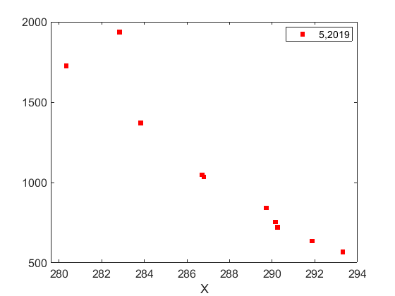
Sun_scan: Campaign
[cal_step{2},sc_avg{2},sc_raw{2},Args{2}]=sc_report(Cal.brw_str{Cal.n_inst},Cal.brw_config_files{Cal.n_inst,2},...
'date_range',datenum(Cal.Date.cal_year,1,Cal.calibration_days{Cal.n_inst,1}([1 end])),...
'CSN_orig',config_def(14),'OSC',Station.OSC,...
'control_flag',1,'residual_limit',35,...
'hg_time',25,'one_flag',1);
202
OK->B17119.202
OK->B17219.202

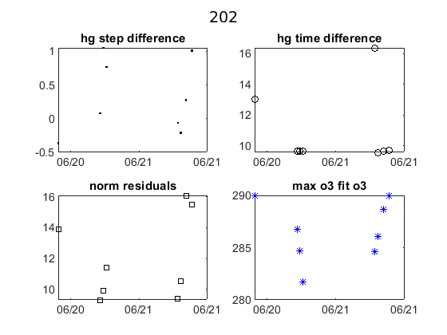 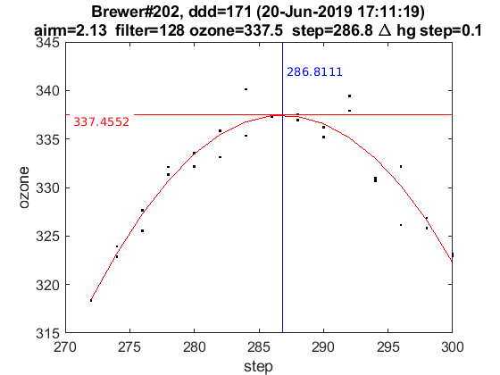 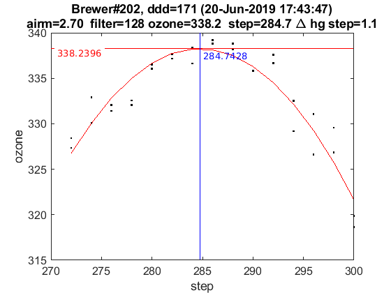

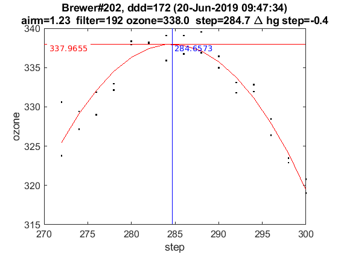 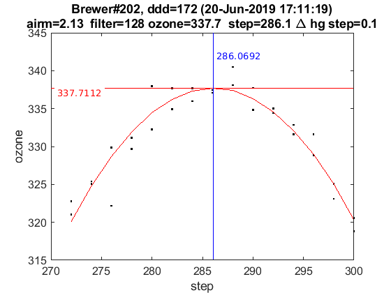 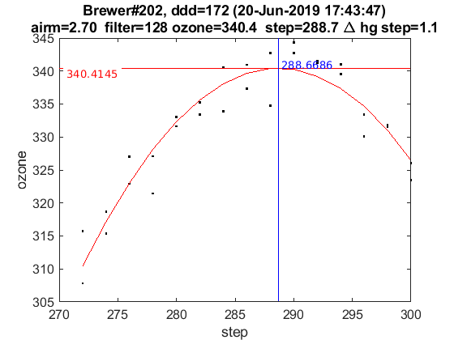 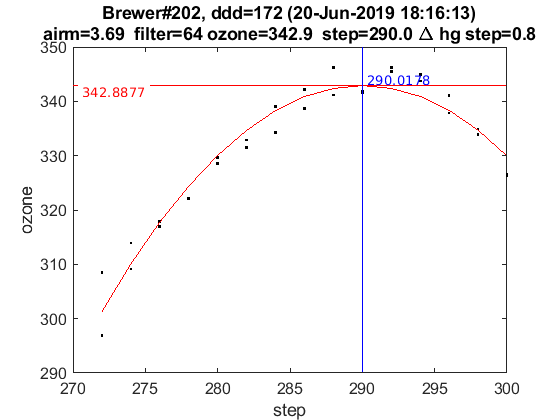

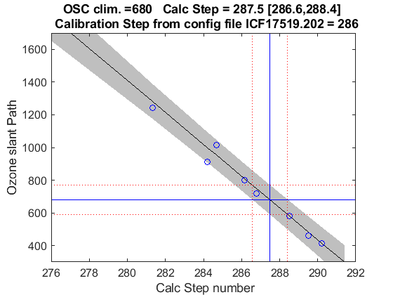
ix=sort(findobj('tag','SC_INDIVIDUAL')); figure(ix); set(get(gca,'title'),'FontSize',8);
printfiles_report(ix',Cal.dir_figs,'aux_pattern',ix,'FontSize',.9,'Width',8.5,'Height',7);
ix=sort(findobj('tag','Final_SC_Calculation'));
if length(ix)>1
Width=8; Height=6;
for i=1:length(ix), figure(ix(i)); set(get(gca,'title'),'FontSize',8); end
else
Width=13; Height=8;
end
printfiles_report(ix',Cal.dir_figs,'aux_pattern',ix,'Width',Width,'Height',Height);
close all
naux =
1
naux =
1
figura =
'202_figures_Final_SC_Calculation_1'
naux =
2
Definicion de variables: SC
if length(cal_step)>1
d_p=[length(cal_step)-1 length(cal_step)]; tags={'','new'};
else
d_p=1; tags={'new'};
end
idx=1; cal_step_error={};
for t=d_p
cal_step_error{t}=round(mean([abs(cal_step{t}(2)-cal_step{t}(3)),abs(cal_step{t}(2)-cal_step{t}(4))]));
latexcmd(fullfile(Cal.file_latex,['cal_wavelengthSC',tags{idx},'_',Cal.brw_str{Cal.n_inst}]),...
['\numSC',tags{idx}],size(sc_avg{t},1),...
['\CALCSTEP',tags{idx}],round(cal_step{t}(1)),...
['\calsteperror',tags{idx}],cal_step_error{t});
idx=idx+1;
end
load(Cal.file_save,'sunscan');sunscan{Cal.n_inst}.cal_step=cal_step;
sunscan{Cal.n_inst}.cal_step_error=cal_step_error;
sunscan{Cal.n_inst}.sc_avg=sc_avg; sunscan{Cal.n_inst}.sc_raw=sc_raw;
sunscan{Cal.n_inst}.info=Args;
save(Cal.file_save,'-APPEND','sunscan');
dsp calibration
res={}; detail={}; DSP_QUAD={}; QUAD_SUM={}; QUAD_DETAIL={};
CUBIC_SUM={}; CUBIC_DETAIL={}; salida={}; CSN_icf={};
l=dir(fullfile('DSP',[Cal.brw_str{Cal.n_inst},'*']));
ldsp=cellstr(cat(1,l.name));
ldsp=ldsp(end-3:end)
for jj=1:length(ldsp)
if jj==length(ldsp),confign=2; else confign=1; end
try
[res{jj},detail{jj},DSP_QUAD{jj},QUAD_SUM{jj},QUAD_DETAIL{jj},...
CUBIC_SUM{jj},CUBIC_DETAIL{jj},salida{jj},CSN_icf{jj},...
]=dspreport(Cal,'dsp_dir',fullfile('DSP',ldsp{jj}),'config_n',1,'wlim',3300);
catch
warning(sprintf('Error en %s. DSP: %s',Cal.brw_name{Cal.n_inst},ldsp{jj}));
res{jj}=NaN*ones(15,9,2); detail{jj}=NaN*ones(7,6,15,2); QUAD_DETAIL{jj}=NaN;
end
datefile =
736848
now:W1015317.202
now:W3015317.202
now:W7015317.202
now:W8015317.202
now:W9015317.202
now:W11015317.202
now:W12015317.202
now:W1115317.202
now:W3115317.202
now:W7115317.202
now:W8115317.202
now:W9115317.202
now:W11115317.202
now:W12115317.202
now:W13115317.202
now:W3215317.202
now:W7215317.202
now:W8215317.202
now:W9215317.202
now:W11215317.202
now:W12215317.202
now:W13215317.202
now:W3315317.202
now:W7315317.202
now:W8315317.202
now:W9315317.202
now:W11315317.202
now:W12315317.202
now:W13315317.202
now:W7415317.202
now:W8415317.202
now:W9415317.202
now:W11415317.202
now:W12415317.202
now:W13415317.202
now:W7515317.202
now:W8515317.202
now:W9515317.202
now:W11515317.202
now:W12515317.202
now:W13515317.202
now:W14515317.202
lines_dsp_15217__202
saving alldsp to DSP/202_17_153/alldsp_15217_202.202
eliminamos la linea slit 2 2967.280000 -0.210807
eliminamos la linea slit 1 2893.600000 0.128256
saving normaldsp to DSP/202_17_153/dspnorm_15217_202.202 as brewer compatible file
Use polyval(pwl(2,:),wl) for calculating normal wavelengths
Saving ozonecoeffs to DSP/202_17_153/opos15217_202.202
281 WL(A) 3030.91 3061.86 3099.35 3133.92 3167.01 3199.05
Res(A) 11.18 11.09 10.85 11.13 10.98 10.99
O3abs(1/cm) 2.6367 1.8023 1.0098 0.6787 0.3753 0.2986 O3: 0.3525
Daumt O3abs(1/cm) 2.6435 1.7953 1.0025 0.6709 0.3689 0.2978 O3: 0.3618
So2abs(1/cm) 3.7093 5.2092 2.3054 2.0715 1.0372 0.6374
Bremen O3abs(1/cm) 2.6459 1.7996 1.0081 0.6809 0.3739 0.2992 O3: 0.3536
Nicolet 1e4*Rayabs(1/cm) 5057.9 4840.1 4592.1 4377.6 4184.2 4007.1 R: 10.2051
Bates(fix) 1e4*Rayabs(1/cm) 0.0 4870.0 4620.0 4410.0 4220.0 4040.0 R: -1.0000
Bodhaine 1e4*Rayabs(1/cm) 5054.4 4838.1 4591.5 4378.2 4185.7 4009.4 R: 9.8290
I0(mW m^-2nm^-1) 11765.81 9480.27 7538.34 4945.25 4149.82 3287.70 ETC: 1525
Ozone offset due to Rayleigh (RayCOeff/O3Coeff): -2.9 DU
Ozone offset due to Rayleigh (Bodhaine): -3.1 DU
Ratio Ozone for So2(A3)= 1.1816, So2/O3(A2)= 2.4482
O3 factor from Bass & Paur to Daumont = 0.9742
O3 factor from Bass & Paur to Bremen = 0.9967
282 WL(A) 3030.98 3061.93 3099.42 3133.99 3167.08 3199.12
Res(A) 11.18 11.09 10.85 11.13 10.98 10.99
O3abs(1/cm) 2.6336 1.8011 1.0094 0.6787 0.3752 0.2983 O3: 0.3518
Daumt O3abs(1/cm) 2.6406 1.7942 1.0020 0.6710 0.3688 0.2977 O3: 0.3613
So2abs(1/cm) 3.6856 5.2418 2.3104 2.0608 1.0384 0.6358
Bremen O3abs(1/cm) 2.6431 1.7984 1.0076 0.6810 0.3738 0.2990 O3: 0.3531
Nicolet 1e4*Rayabs(1/cm) 5057.3 4839.6 4591.6 4377.2 4183.8 4006.8 R: 10.2031
Bates(fix) 1e4*Rayabs(1/cm) 0.0 4870.0 4620.0 4410.0 4220.0 4040.0 R: -1.0000
Bodhaine 1e4*Rayabs(1/cm) 5053.8 4837.6 4591.1 4377.8 4185.3 4009.1 R: 9.8300
I0(mW m^-2nm^-1) 11759.50 9473.90 7532.86 4942.59 4139.71 3282.27 ETC: 1534
Ozone offset due to Rayleigh (RayCOeff/O3Coeff): -2.9 DU
Ozone offset due to Rayleigh (Bodhaine): -3.1 DU
Ratio Ozone for So2(A3)= 1.1799, So2/O3(A2)= 2.4706
O3 factor from Bass & Paur to Daumont = 0.9736
O3 factor from Bass & Paur to Bremen = 0.9962
283 WL(A) 3031.06 3062.00 3099.50 3134.06 3167.15 3199.19
Res(A) 11.18 11.09 10.85 11.13 10.98 10.98
O3abs(1/cm) 2.6306 1.7998 1.0091 0.6786 0.3751 0.2980 O3: 0.3512
Daumt O3abs(1/cm) 2.6377 1.7930 1.0016 0.6711 0.3686 0.2975 O3: 0.3608
So2abs(1/cm) 3.6618 5.2730 2.3153 2.0502 1.0396 0.6340
Bremen O3abs(1/cm) 2.6403 1.7972 1.0072 0.6811 0.3737 0.2988 O3: 0.3526
Nicolet 1e4*Rayabs(1/cm) 5056.8 4839.1 4591.1 4376.7 4183.4 4006.4 R: 10.2012
Bates(fix) 1e4*Rayabs(1/cm) 0.0 4870.0 4620.0 4410.0 4220.0 4040.0 R: -1.0000
Bodhaine 1e4*Rayabs(1/cm) 5053.3 4837.1 4590.6 4377.4 4184.9 4008.7 R: 9.8262
I0(mW m^-2nm^-1) 11753.20 9467.55 7527.26 4939.92 4129.63 3276.85 ETC: 1543
Ozone offset due to Rayleigh (RayCOeff/O3Coeff): -2.9 DU
Ozone offset due to Rayleigh (Bodhaine): -3.1 DU
Ratio Ozone for So2(A3)= 1.1780, So2/O3(A2)= 2.4918
O3 factor from Bass & Paur to Daumont = 0.9734
O3 factor from Bass & Paur to Bremen = 0.9962
284 WL(A) 3031.13 3062.07 3099.57 3134.13 3167.22 3199.26
Res(A) 11.18 11.09 10.85 11.13 10.98 10.98
O3abs(1/cm) 2.6276 1.7984 1.0088 0.6786 0.3750 0.2977 O3: 0.3506
Daumt O3abs(1/cm) 2.6348 1.7919 1.0012 0.6712 0.3685 0.2973 O3: 0.3602
So2abs(1/cm) 3.6393 5.3033 2.3204 2.0396 1.0409 0.6323
Bremen O3abs(1/cm) 2.6375 1.7959 1.0068 0.6811 0.3736 0.2986 O3: 0.3520
Nicolet 1e4*Rayabs(1/cm) 5056.3 4838.6 4590.7 4376.3 4183.0 4006.0 R: 10.1992
Bates(fix) 1e4*Rayabs(1/cm) 0.0 4870.0 4620.0 4410.0 4220.0 4040.0 R: -1.0000
Bodhaine 1e4*Rayabs(1/cm) 5052.8 4836.6 4590.2 4377.0 4184.5 4008.3 R: 9.8232
I0(mW m^-2nm^-1) 11746.90 9461.20 7521.52 4937.25 4119.57 3271.43 ETC: 1551
Ozone offset due to Rayleigh (RayCOeff/O3Coeff): -2.9 DU
Ozone offset due to Rayleigh (Bodhaine): -3.1 DU
Ratio Ozone for So2(A3)= 1.1760, So2/O3(A2)= 2.5126
O3 factor from Bass & Paur to Daumont = 0.9732
O3 factor from Bass & Paur to Bremen = 0.9961
285 WL(A) 3031.20 3062.14 3099.64 3134.21 3167.29 3199.33
Res(A) 11.18 11.09 10.85 11.13 10.98 10.98
O3abs(1/cm) 2.6249 1.7972 1.0085 0.6785 0.3750 0.2974 O3: 0.3498
Daumt O3abs(1/cm) 2.6320 1.7907 1.0008 0.6713 0.3684 0.2970 O3: 0.3596
So2abs(1/cm) 3.6180 5.3336 2.3260 2.0289 1.0421 0.6305
Bremen O3abs(1/cm) 2.6348 1.7946 1.0064 0.6811 0.3735 0.2983 O3: 0.3513
Nicolet 1e4*Rayabs(1/cm) 5055.8 4838.1 4590.2 4375.9 4182.6 4005.7 R: 10.1973
Bates(fix) 1e4*Rayabs(1/cm) 0.0 4870.0 4620.0 4410.0 4220.0 4040.0 R: -1.0000
Bodhaine 1e4*Rayabs(1/cm) 5052.3 4836.1 4589.7 4376.5 4184.2 4007.9 R: 9.8251
I0(mW m^-2nm^-1) 11740.62 9454.86 7497.44 4934.59 4109.53 3266.64 ETC: 1542
Ozone offset due to Rayleigh (RayCOeff/O3Coeff): -2.9 DU
Ozone offset due to Rayleigh (Bodhaine): -3.1 DU
Ratio Ozone for So2(A3)= 1.1739, So2/O3(A2)= 2.5336
O3 factor from Bass & Paur to Daumont = 0.9727
O3 factor from Bass & Paur to Bremen = 0.9958
286 WL(A) 3031.27 3062.22 3099.71 3134.28 3167.35 3199.39
Res(A) 11.18 11.09 10.85 11.13 10.98 10.98
O3abs(1/cm) 2.6222 1.7959 1.0081 0.6785 0.3749 0.2971 O3: 0.3490
Daumt O3abs(1/cm) 2.6292 1.7895 1.0004 0.6713 0.3683 0.2968 O3: 0.3590
So2abs(1/cm) 3.5966 5.3639 2.3317 2.0179 1.0434 0.6286
Bremen O3abs(1/cm) 2.6321 1.7933 1.0060 0.6811 0.3734 0.2981 O3: 0.3506
Nicolet 1e4*Rayabs(1/cm) 5055.2 4837.7 4589.8 4375.5 4182.2 4005.3 R: 10.1953
Bates(fix) 1e4*Rayabs(1/cm) 0.0 4870.0 4620.0 4410.0 4220.0 4040.0 R: -1.0000
Bodhaine 1e4*Rayabs(1/cm) 5051.7 4835.6 4589.3 4376.1 4183.8 4007.6 R: 9.8207
I0(mW m^-2nm^-1) 11734.34 9448.53 7471.83 4931.93 4099.51 3262.21 ETC: 1533
Ozone offset due to Rayleigh (RayCOeff/O3Coeff): -2.9 DU
Ozone offset due to Rayleigh (Bodhaine): -3.1 DU
Ratio Ozone for So2(A3)= 1.1717, So2/O3(A2)= 2.5545
O3 factor from Bass & Paur to Daumont = 0.9722
O3 factor from Bass & Paur to Bremen = 0.9954
287 WL(A) 3031.35 3062.29 3099.78 3134.35 3167.42 3199.46
Res(A) 11.18 11.09 10.85 11.13 10.98 10.98
O3abs(1/cm) 2.6195 1.7946 1.0078 0.6784 0.3749 0.2967 O3: 0.3483
Daumt O3abs(1/cm) 2.6264 1.7882 1.0000 0.6713 0.3682 0.2966 O3: 0.3583
So2abs(1/cm) 3.5752 5.3930 2.3376 2.0069 1.0446 0.6267
Bremen O3abs(1/cm) 2.6294 1.7920 1.0056 0.6811 0.3733 0.2978 O3: 0.3499
Nicolet 1e4*Rayabs(1/cm) 5054.7 4837.2 4589.3 4375.0 4181.8 4004.9 R: 10.1934
Bates(fix) 1e4*Rayabs(1/cm) 0.0 4870.0 4620.0 4410.0 4220.0 4040.0 R: -1.0000
Bodhaine 1e4*Rayabs(1/cm) 5051.2 4835.1 4588.8 4375.7 4183.4 4007.2 R: 9.8183
I0(mW m^-2nm^-1) 11728.08 9442.21 7446.37 4929.80 4089.52 3257.69 ETC: 1523
Ozone offset due to Rayleigh (RayCOeff/O3Coeff): -2.9 DU
Ozone offset due to Rayleigh (Bodhaine): -3.1 DU
Ratio Ozone for So2(A3)= 1.1695, So2/O3(A2)= 2.5746
O3 factor from Bass & Paur to Daumont = 0.9719
O3 factor from Bass & Paur to Bremen = 0.9952
288 WL(A) 3031.42 3062.36 3099.85 3134.42 3167.49 3199.53
Res(A) 11.18 11.09 10.85 11.13 10.98 10.98
O3abs(1/cm) 2.6168 1.7933 1.0075 0.6783 0.3749 0.2963 O3: 0.3474
Daumt O3abs(1/cm) 2.6236 1.7870 0.9996 0.6714 0.3682 0.2963 O3: 0.3576
So2abs(1/cm) 3.5549 5.4207 2.3434 1.9958 1.0459 0.6247
Bremen O3abs(1/cm) 2.6267 1.7907 1.0052 0.6811 0.3733 0.2975 O3: 0.3492
Nicolet 1e4*Rayabs(1/cm) 5054.2 4836.7 4588.9 4374.6 4181.4 4004.6 R: 10.1914
Bates(fix) 1e4*Rayabs(1/cm) 0.0 4870.0 4620.0 4410.0 4220.0 4040.0 R: -1.0000
Bodhaine 1e4*Rayabs(1/cm) 5050.7 4834.7 4588.4 4375.3 4183.0 4006.8 R: 9.8191
I0(mW m^-2nm^-1) 11721.82 9435.90 7421.06 4927.62 4079.55 3251.43 ETC: 1510
Ozone offset due to Rayleigh (RayCOeff/O3Coeff): -2.9 DU
Ozone offset due to Rayleigh (Bodhaine): -3.1 DU
Ratio Ozone for So2(A3)= 1.1671, So2/O3(A2)= 2.5937
O3 factor from Bass & Paur to Daumont = 0.9715
O3 factor from Bass & Paur to Bremen = 0.9950
289 WL(A) 3031.49 3062.43 3099.92 3134.49 3167.56 3199.60
Res(A) 11.18 11.09 10.85 11.13 10.98 10.98
O3abs(1/cm) 2.6140 1.7919 1.0072 0.6781 0.3749 0.2959 O3: 0.3465
Daumt O3abs(1/cm) 2.6209 1.7857 0.9993 0.6713 0.3681 0.2960 O3: 0.3569
So2abs(1/cm) 3.5359 5.4484 2.3497 1.9848 1.0471 0.6227
Bremen O3abs(1/cm) 2.6241 1.7893 1.0048 0.6810 0.3733 0.2972 O3: 0.3484
Nicolet 1e4*Rayabs(1/cm) 5053.7 4836.2 4588.4 4374.2 4181.0 4004.2 R: 10.1895
Bates(fix) 1e4*Rayabs(1/cm) 0.0 4870.0 4620.0 4410.0 4220.0 4040.0 R: -1.0000
Bodhaine 1e4*Rayabs(1/cm) 5050.2 4834.2 4587.9 4374.8 4182.6 4006.5 R: 9.8157
I0(mW m^-2nm^-1) 11715.57 9429.59 7395.89 4924.16 4069.60 3242.19 ETC: 1492
Ozone offset due to Rayleigh (RayCOeff/O3Coeff): -2.9 DU
Ozone offset due to Rayleigh (Bodhaine): -3.1 DU
Ratio Ozone for So2(A3)= 1.1644, So2/O3(A2)= 2.6134
O3 factor from Bass & Paur to Daumont = 0.9709
O3 factor from Bass & Paur to Bremen = 0.9945
290 WL(A) 3031.56 3062.51 3099.99 3134.56 3167.63 3199.67
Res(A) 11.18 11.09 10.85 11.13 10.98 10.98
O3abs(1/cm) 2.6111 1.7904 1.0069 0.6780 0.3749 0.2955 O3: 0.3456
Daumt O3abs(1/cm) 2.6182 1.7845 0.9989 0.6713 0.3681 0.2957 O3: 0.3561
So2abs(1/cm) 3.5169 5.4761 2.3563 1.9735 1.0484 0.6207
Bremen O3abs(1/cm) 2.6214 1.7880 1.0045 0.6810 0.3733 0.2969 O3: 0.3476
Nicolet 1e4*Rayabs(1/cm) 5053.1 4835.7 4588.0 4373.8 4180.6 4003.8 R: 10.1875
Bates(fix) 1e4*Rayabs(1/cm) 0.0 4870.0 4620.0 4410.0 4220.0 4040.0 R: -1.0000
Bodhaine 1e4*Rayabs(1/cm) 5049.7 4833.7 4587.5 4374.4 4182.2 4006.1 R: 9.8127
I0(mW m^-2nm^-1) 11709.33 9423.30 7370.86 4920.29 4059.68 3232.97 ETC: 1475
Ozone offset due to Rayleigh (RayCOeff/O3Coeff): -2.9 DU
Ozone offset due to Rayleigh (Bodhaine): -3.1 DU
Ratio Ozone for So2(A3)= 1.1617, So2/O3(A2)= 2.6335
O3 factor from Bass & Paur to Daumont = 0.9706
O3 factor from Bass & Paur to Bremen = 0.9944
291 WL(A) 3031.64 3062.58 3100.07 3134.63 3167.70 3199.74
Res(A) 11.18 11.09 10.85 11.13 10.98 10.98
O3abs(1/cm) 2.6084 1.7889 1.0067 0.6778 0.3749 0.2951 O3: 0.3448
Daumt O3abs(1/cm) 2.6155 1.7832 0.9985 0.6713 0.3681 0.2954 O3: 0.3553
So2abs(1/cm) 3.4980 5.5028 2.3629 1.9621 1.0496 0.6187
Bremen O3abs(1/cm) 2.6189 1.7866 1.0041 0.6809 0.3732 0.2966 O3: 0.3467
Nicolet 1e4*Rayabs(1/cm) 5052.6 4835.2 4587.5 4373.3 4180.2 4003.4 R: 10.1856
Bates(fix) 1e4*Rayabs(1/cm) 0.0 4870.0 4620.0 4410.0 4220.0 4040.0 R: -1.0000
Bodhaine 1e4*Rayabs(1/cm) 5049.1 4833.2 4587.0 4374.0 4181.8 4005.7 R: 9.8121
I0(mW m^-2nm^-1) 11703.10 9417.01 7345.98 4916.41 4049.77 3223.77 ETC: 1459
Ozone offset due to Rayleigh (RayCOeff/O3Coeff): -3.0 DU
Ozone offset due to Rayleigh (Bodhaine): -3.1 DU
Ratio Ozone for So2(A3)= 1.1588, So2/O3(A2)= 2.6528
O3 factor from Bass & Paur to Daumont = 0.9704
O3 factor from Bass & Paur to Bremen = 0.9944
saving powfiu7 to DSP/202_17_153/dsp_15217_202.202
freecoef =
3
freecoef =
8
freecoef =
8
freecoef =
8
freecoef =
8
freecoef =
8
freecoef =
8
freecoef =
8
freecoef =
8
freecoef =
8
saving data to file:DSP/202_17_153/dsp_15217_202.202
Use brstps2 to calculate steps and wavelengths
Saving ozonecoeffs to DSP/202_17_153/opos_pow7_15217_202.202
281 WL(A) 3030.90 3061.94 3099.39 3133.95 3166.92 3198.87
Res(A) 11.21 11.09 10.86 11.13 10.97 10.97
O3abs(1/cm) 2.6371 1.8009 1.0096 0.6787 0.3754 0.2993 O3: 0.3531
Daumt O3abs(1/cm) 2.6438 1.7940 1.0023 0.6709 0.3691 0.2983 O3: 0.3619
So2abs(1/cm) 3.7132 5.2475 2.3080 2.0682 1.0358 0.6416
Bremen O3abs(1/cm) 2.6463 1.7982 1.0078 0.6810 0.3741 0.2997 O3: 0.3538
Nicolet 1e4*Rayabs(1/cm) 5057.9 4839.5 4591.8 4377.5 4184.6 4008.1 R: 10.6436
Bates(fix) 1e4*Rayabs(1/cm) 0.0 4870.0 4620.0 4410.0 4220.0 4040.0 R: -1.0000
Bodhaine 1e4*Rayabs(1/cm) 5054.4 4837.5 4591.3 4378.1 4186.2 4010.4 R: 10.2653
I0(mW m^-2nm^-1) 11765.59 9472.83 7535.70 4944.40 4161.85 3301.48 ETC: 1520
Ozone offset due to Rayleigh (RayCOeff/O3Coeff): -3.0 DU
Ozone offset due to Rayleigh (Bodhaine): -3.2 DU
Ratio Ozone for So2(A3)= 1.1818, So2/O3(A2)= 2.4965
O3 factor from Bass & Paur to Daumont = 0.9757
O3 factor from Bass & Paur to Bremen = 0.9979
282 WL(A) 3030.98 3062.01 3099.46 3134.02 3166.99 3198.94
Res(A) 11.21 11.09 10.86 11.13 10.97 10.97
O3abs(1/cm) 2.6340 1.7996 1.0093 0.6787 0.3753 0.2990 O3: 0.3527
Daumt O3abs(1/cm) 2.6409 1.7928 1.0018 0.6710 0.3689 0.2981 O3: 0.3615
So2abs(1/cm) 3.6896 5.2783 2.3129 2.0575 1.0370 0.6400
Bremen O3abs(1/cm) 2.6434 1.7969 1.0074 0.6810 0.3739 0.2995 O3: 0.3534
Nicolet 1e4*Rayabs(1/cm) 5057.4 4839.0 4591.4 4377.0 4184.2 4007.7 R: 10.6411
Bates(fix) 1e4*Rayabs(1/cm) 0.0 4870.0 4620.0 4410.0 4220.0 4040.0 R: -1.0000
Bodhaine 1e4*Rayabs(1/cm) 5053.9 4837.0 4590.9 4377.7 4185.8 4010.0 R: 10.2678
I0(mW m^-2nm^-1) 11759.29 9466.47 7530.17 4941.74 4151.70 3296.03 ETC: 1529
Ozone offset due to Rayleigh (RayCOeff/O3Coeff): -3.0 DU
Ozone offset due to Rayleigh (Bodhaine): -3.2 DU
Ratio Ozone for So2(A3)= 1.1803, So2/O3(A2)= 2.5173
O3 factor from Bass & Paur to Daumont = 0.9755
O3 factor from Bass & Paur to Bremen = 0.9978
283 WL(A) 3031.05 3062.08 3099.53 3134.09 3167.06 3199.01
Res(A) 11.21 11.09 10.86 11.13 10.97 10.97
O3abs(1/cm) 2.6309 1.7982 1.0090 0.6786 0.3752 0.2988 O3: 0.3522
Daumt O3abs(1/cm) 2.6380 1.7917 1.0014 0.6711 0.3688 0.2980 O3: 0.3611
So2abs(1/cm) 3.6658 5.3086 2.3179 2.0469 1.0382 0.6384
Bremen O3abs(1/cm) 2.6406 1.7957 1.0070 0.6811 0.3738 0.2993 O3: 0.3530
Nicolet 1e4*Rayabs(1/cm) 5056.9 4838.6 4590.9 4376.6 4183.9 4007.4 R: 10.6386
Bates(fix) 1e4*Rayabs(1/cm) 0.0 4870.0 4620.0 4410.0 4220.0 4040.0 R: -1.0000
Bodhaine 1e4*Rayabs(1/cm) 5053.4 4836.5 4590.4 4377.2 4185.4 4009.6 R: 10.2654
I0(mW m^-2nm^-1) 11753.01 9460.12 7524.50 4939.07 4141.58 3290.59 ETC: 1537
Ozone offset due to Rayleigh (RayCOeff/O3Coeff): -3.0 DU
Ozone offset due to Rayleigh (Bodhaine): -3.2 DU
Ratio Ozone for So2(A3)= 1.1786, So2/O3(A2)= 2.5379
O3 factor from Bass & Paur to Daumont = 0.9754
O3 factor from Bass & Paur to Bremen = 0.9978
284 WL(A) 3031.12 3062.16 3099.60 3134.16 3167.13 3199.08
Res(A) 11.21 11.09 10.86 11.13 10.97 10.97
O3abs(1/cm) 2.6279 1.7970 1.0087 0.6786 0.3751 0.2985 O3: 0.3516
Daumt O3abs(1/cm) 2.6351 1.7905 1.0010 0.6712 0.3686 0.2978 O3: 0.3607
So2abs(1/cm) 3.6427 5.3389 2.3233 2.0362 1.0394 0.6368
Bremen O3abs(1/cm) 2.6378 1.7944 1.0066 0.6811 0.3737 0.2991 O3: 0.3525
Nicolet 1e4*Rayabs(1/cm) 5056.3 4838.1 4590.5 4376.2 4183.5 4007.0 R: 10.6361
Bates(fix) 1e4*Rayabs(1/cm) 0.0 4870.0 4620.0 4410.0 4220.0 4040.0 R: -1.0000
Bodhaine 1e4*Rayabs(1/cm) 5052.8 4836.0 4589.9 4376.8 4185.0 4009.3 R: 10.2584
I0(mW m^-2nm^-1) 11746.73 9453.78 7509.81 4936.40 4131.48 3285.15 ETC: 1537
Ozone offset due to Rayleigh (RayCOeff/O3Coeff): -3.0 DU
Ozone offset due to Rayleigh (Bodhaine): -3.2 DU
Ratio Ozone for So2(A3)= 1.1767, So2/O3(A2)= 2.5588
O3 factor from Bass & Paur to Daumont = 0.9749
O3 factor from Bass & Paur to Bremen = 0.9975
285 WL(A) 3031.20 3062.23 3099.67 3134.23 3167.20 3199.15
Res(A) 11.21 11.09 10.86 11.13 10.97 10.97
O3abs(1/cm) 2.6252 1.7957 1.0083 0.6785 0.3750 0.2982 O3: 0.3510
Daumt O3abs(1/cm) 2.6323 1.7893 1.0006 0.6713 0.3685 0.2976 O3: 0.3602
So2abs(1/cm) 3.6214 5.3692 2.3290 2.0256 1.0407 0.6351
Bremen O3abs(1/cm) 2.6351 1.7931 1.0062 0.6811 0.3736 0.2989 O3: 0.3520
Nicolet 1e4*Rayabs(1/cm) 5055.8 4837.6 4590.0 4375.8 4183.1 4006.6 R: 10.6336
Bates(fix) 1e4*Rayabs(1/cm) 0.0 4870.0 4620.0 4410.0 4220.0 4040.0 R: -1.0000
Bodhaine 1e4*Rayabs(1/cm) 5052.3 4835.6 4589.5 4376.4 4184.6 4008.9 R: 10.2590
I0(mW m^-2nm^-1) 11740.46 9447.45 7484.15 4933.74 4121.41 3279.72 ETC: 1526
Ozone offset due to Rayleigh (RayCOeff/O3Coeff): -3.0 DU
Ozone offset due to Rayleigh (Bodhaine): -3.2 DU
Ratio Ozone for So2(A3)= 1.1749, So2/O3(A2)= 2.5796
O3 factor from Bass & Paur to Daumont = 0.9745
O3 factor from Bass & Paur to Bremen = 0.9972
286 WL(A) 3031.27 3062.30 3099.75 3134.30 3167.27 3199.22
Res(A) 11.21 11.09 10.86 11.13 10.97 10.97
O3abs(1/cm) 2.6225 1.7944 1.0080 0.6784 0.3750 0.2979 O3: 0.3503
Daumt O3abs(1/cm) 2.6295 1.7880 1.0002 0.6713 0.3684 0.2974 O3: 0.3597
So2abs(1/cm) 3.6001 5.3978 2.3347 2.0144 1.0419 0.6333
Bremen O3abs(1/cm) 2.6324 1.7918 1.0058 0.6811 0.3735 0.2987 O3: 0.3514
Nicolet 1e4*Rayabs(1/cm) 5055.3 4837.1 4589.5 4375.3 4182.7 4006.2 R: 10.6311
Bates(fix) 1e4*Rayabs(1/cm) 0.0 4870.0 4620.0 4410.0 4220.0 4040.0 R: -1.0000
Bodhaine 1e4*Rayabs(1/cm) 5051.8 4835.1 4589.0 4376.0 4184.2 4008.5 R: 10.2599
I0(mW m^-2nm^-1) 11734.21 9441.13 7458.63 4931.25 4111.35 3274.30 ETC: 1514
Ozone offset due to Rayleigh (RayCOeff/O3Coeff): -3.0 DU
Ozone offset due to Rayleigh (Bodhaine): -3.2 DU
Ratio Ozone for So2(A3)= 1.1729, So2/O3(A2)= 2.5992
O3 factor from Bass & Paur to Daumont = 0.9740
O3 factor from Bass & Paur to Bremen = 0.9969
287 WL(A) 3031.34 3062.37 3099.82 3134.37 3167.34 3199.29
Res(A) 11.21 11.09 10.86 11.13 10.97 10.97
O3abs(1/cm) 2.6198 1.7930 1.0077 0.6783 0.3749 0.2976 O3: 0.3496
Daumt O3abs(1/cm) 2.6267 1.7868 0.9998 0.6714 0.3683 0.2972 O3: 0.3591
So2abs(1/cm) 3.5788 5.4255 2.3406 2.0034 1.0431 0.6316
Bremen O3abs(1/cm) 2.6297 1.7905 1.0054 0.6811 0.3734 0.2985 O3: 0.3508
Nicolet 1e4*Rayabs(1/cm) 5054.8 4836.6 4589.1 4374.9 4182.3 4005.9 R: 10.6286
Bates(fix) 1e4*Rayabs(1/cm) 0.0 4870.0 4620.0 4410.0 4220.0 4040.0 R: -1.0000
Bodhaine 1e4*Rayabs(1/cm) 5051.3 4834.6 4588.6 4375.6 4183.8 4008.2 R: 10.2512
I0(mW m^-2nm^-1) 11727.96 9434.82 7433.26 4929.11 4101.32 3268.88 ETC: 1503
Ozone offset due to Rayleigh (RayCOeff/O3Coeff): -3.0 DU
Ozone offset due to Rayleigh (Bodhaine): -3.2 DU
Ratio Ozone for So2(A3)= 1.1707, So2/O3(A2)= 2.6184
O3 factor from Bass & Paur to Daumont = 0.9735
O3 factor from Bass & Paur to Bremen = 0.9965
288 WL(A) 3031.41 3062.45 3099.89 3134.44 3167.41 3199.35
Res(A) 11.21 11.09 10.86 11.13 10.97 10.97
O3abs(1/cm) 2.6171 1.7917 1.0073 0.6783 0.3749 0.2973 O3: 0.3488
Daumt O3abs(1/cm) 2.6239 1.7855 0.9994 0.6714 0.3682 0.2970 O3: 0.3585
So2abs(1/cm) 3.5579 5.4532 2.3466 1.9924 1.0444 0.6297
Bremen O3abs(1/cm) 2.6270 1.7891 1.0050 0.6811 0.3733 0.2982 O3: 0.3502
Nicolet 1e4*Rayabs(1/cm) 5054.2 4836.1 4588.6 4374.5 4181.9 4005.5 R: 10.6261
Bates(fix) 1e4*Rayabs(1/cm) 0.0 4870.0 4620.0 4410.0 4220.0 4040.0 R: -1.0000
Bodhaine 1e4*Rayabs(1/cm) 5050.7 4834.1 4588.1 4375.1 4183.4 4007.8 R: 10.2493
I0(mW m^-2nm^-1) 11721.72 9428.52 7408.03 4926.82 4091.32 3264.49 ETC: 1493
Ozone offset due to Rayleigh (RayCOeff/O3Coeff): -3.0 DU
Ozone offset due to Rayleigh (Bodhaine): -3.2 DU
Ratio Ozone for So2(A3)= 1.1684, So2/O3(A2)= 2.6376
O3 factor from Bass & Paur to Daumont = 0.9730
O3 factor from Bass & Paur to Bremen = 0.9962
289 WL(A) 3031.49 3062.52 3099.96 3134.51 3167.48 3199.42
Res(A) 11.21 11.09 10.86 11.13 10.97 10.97
O3abs(1/cm) 2.6143 1.7902 1.0071 0.6781 0.3749 0.2969 O3: 0.3481
Daumt O3abs(1/cm) 2.6212 1.7842 0.9991 0.6713 0.3682 0.2967 O3: 0.3579
So2abs(1/cm) 3.5390 5.4809 2.3531 1.9813 1.0457 0.6278
Bremen O3abs(1/cm) 2.6243 1.7877 1.0047 0.6810 0.3733 0.2980 O3: 0.3495
Nicolet 1e4*Rayabs(1/cm) 5053.7 4835.6 4588.2 4374.1 4181.5 4005.1 R: 10.6236
Bates(fix) 1e4*Rayabs(1/cm) 0.0 4870.0 4620.0 4410.0 4220.0 4040.0 R: -1.0000
Bodhaine 1e4*Rayabs(1/cm) 5050.2 4833.6 4587.7 4374.7 4183.0 4007.4 R: 10.2538
I0(mW m^-2nm^-1) 11715.48 9422.23 7382.95 4922.94 4081.33 3260.02 ETC: 1485
Ozone offset due to Rayleigh (RayCOeff/O3Coeff): -3.1 DU
Ozone offset due to Rayleigh (Bodhaine): -3.2 DU
Ratio Ozone for So2(A3)= 1.1660, So2/O3(A2)= 2.6572
O3 factor from Bass & Paur to Daumont = 0.9728
O3 factor from Bass & Paur to Bremen = 0.9961
290 WL(A) 3031.56 3062.59 3100.03 3134.58 3167.55 3199.49
Res(A) 11.21 11.09 10.86 11.13 10.96 10.97
O3abs(1/cm) 2.6114 1.7887 1.0068 0.6779 0.3749 0.2966 O3: 0.3474
Daumt O3abs(1/cm) 2.6185 1.7829 0.9987 0.6713 0.3681 0.2965 O3: 0.3572
So2abs(1/cm) 3.5200 5.5072 2.3597 1.9699 1.0469 0.6259
Bremen O3abs(1/cm) 2.6217 1.7863 1.0043 0.6809 0.3733 0.2977 O3: 0.3488
Nicolet 1e4*Rayabs(1/cm) 5053.2 4835.1 4587.7 4373.6 4181.1 4004.8 R: 10.6211
Bates(fix) 1e4*Rayabs(1/cm) 0.0 4870.0 4620.0 4410.0 4220.0 4040.0 R: -1.0000
Bodhaine 1e4*Rayabs(1/cm) 5049.7 4833.1 4587.2 4374.3 4182.6 4007.1 R: 10.2450
I0(mW m^-2nm^-1) 11709.26 9415.94 7358.01 4919.07 4071.37 3255.45 ETC: 1476
Ozone offset due to Rayleigh (RayCOeff/O3Coeff): -3.1 DU
Ozone offset due to Rayleigh (Bodhaine): -3.2 DU
Ratio Ozone for So2(A3)= 1.1634, So2/O3(A2)= 2.6759
O3 factor from Bass & Paur to Daumont = 0.9725
O3 factor from Bass & Paur to Bremen = 0.9960
291 WL(A) 3031.63 3062.66 3100.10 3134.65 3167.62 3199.56
Res(A) 11.21 11.09 10.86 11.13 10.96 10.97
O3abs(1/cm) 2.6086 1.7873 1.0065 0.6777 0.3749 0.2962 O3: 0.3465
Daumt O3abs(1/cm) 2.6158 1.7816 0.9984 0.6713 0.3681 0.2962 O3: 0.3565
So2abs(1/cm) 3.5012 5.5319 2.3663 1.9586 1.0482 0.6240
Bremen O3abs(1/cm) 2.6191 1.7849 1.0039 0.6808 0.3732 0.2974 O3: 0.3480
Nicolet 1e4*Rayabs(1/cm) 5052.6 4834.6 4587.3 4373.2 4180.7 4004.4 R: 10.6186
Bates(fix) 1e4*Rayabs(1/cm) 0.0 4870.0 4620.0 4410.0 4220.0 4040.0 R: -1.0000
Bodhaine 1e4*Rayabs(1/cm) 5049.2 4832.6 4586.8 4373.9 4182.3 4006.7 R: 10.2411
I0(mW m^-2nm^-1) 11703.05 9409.67 7333.22 4915.20 4061.43 3247.65 ETC: 1461
Ozone offset due to Rayleigh (RayCOeff/O3Coeff): -3.1 DU
Ozone offset due to Rayleigh (Bodhaine): -3.2 DU
Ratio Ozone for So2(A3)= 1.1607, So2/O3(A2)= 2.6934
O3 factor from Bass & Paur to Daumont = 0.9722
O3 factor from Bass & Paur to Bremen = 0.9958


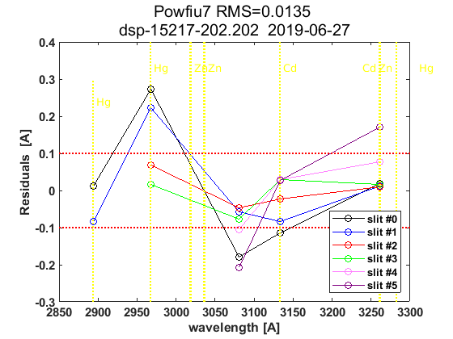 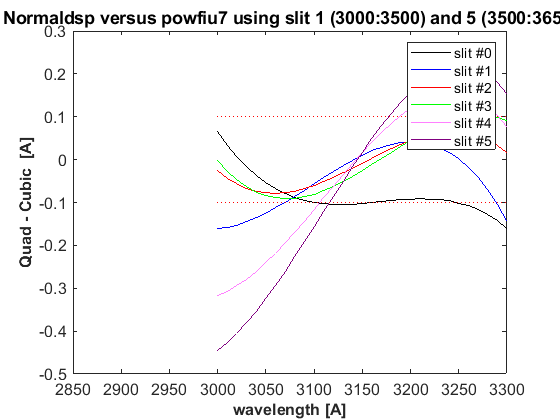

datefile =
736852
now:W1015717.202
now:W3015717.202
now:W7015717.202
now:W8015717.202
now:W9015717.202
now:W11015717.202
now:W12015717.202
now:W1115717.202
now:W3115717.202
now:W7115717.202
now:W8115717.202
now:W9115717.202
now:W11115717.202
now:W12115717.202
now:W13115717.202
now:W3215717.202
now:W7215717.202
now:W8215717.202
now:W9215717.202
now:W11215717.202
now:W12215717.202
now:W13215717.202
now:W3315717.202
now:W7315717.202
now:W8315717.202
now:W9315717.202
now:W11315717.202
now:W12315717.202
now:W13315717.202
now:W7415717.202
now:W8415717.202
now:W9415717.202
now:W11415717.202
now:W12415717.202
now:W13415717.202
now:W7515717.202
now:W8515717.202
now:W9515717.202
now:W11515717.202
now:W12515717.202
now:W13515717.202
now:W14515717.202
lines_dsp_15617__202
saving alldsp to DSP/202_17_157/alldsp_15617_202.202
eliminamos la linea slit 1 2967.280000 -0.122657
saving normaldsp to DSP/202_17_157/dspnorm_15617_202.202 as brewer compatible file
Use polyval(pwl(2,:),wl) for calculating normal wavelengths
Saving ozonecoeffs to DSP/202_17_157/opos15617_202.202
281 WL(A) 3031.08 3062.27 3099.83 3134.45 3167.47 3199.53
Res(A) 11.21 11.10 10.90 11.18 11.00 10.89
O3abs(1/cm) 2.6296 1.7950 1.0076 0.6781 0.3749 0.2965 O3: 0.3479
Daumt O3abs(1/cm) 2.6368 1.7886 0.9998 0.6712 0.3682 0.2965 O3: 0.3580
So2abs(1/cm) 3.6553 5.3836 2.3425 1.9902 1.0455 0.6251
Bremen O3abs(1/cm) 2.6394 1.7924 1.0054 0.6810 0.3734 0.2977 O3: 0.3496
Nicolet 1e4*Rayabs(1/cm) 5056.6 4837.3 4589.0 4374.4 4181.5 4004.6 R: 10.1844
Bates(fix) 1e4*Rayabs(1/cm) 0.0 4870.0 4620.0 4410.0 4220.0 4040.0 R: -1.0000
Bodhaine 1e4*Rayabs(1/cm) 5053.1 4835.3 4588.5 4375.1 4183.1 4006.8 R: 9.8093
I0(mW m^-2nm^-1) 11750.49 9444.27 7424.39 4926.17 4082.38 3250.35 ETC: 1506
Ozone offset due to Rayleigh (RayCOeff/O3Coeff): -2.9 DU
Ozone offset due to Rayleigh (Bodhaine): -3.1 DU
Ratio Ozone for So2(A3)= 1.1693, So2/O3(A2)= 2.5595
O3 factor from Bass & Paur to Daumont = 0.9718
O3 factor from Bass & Paur to Bremen = 0.9952
282 WL(A) 3031.15 3062.34 3099.90 3134.52 3167.54 3199.60
Res(A) 11.21 11.10 10.90 11.18 11.00 10.89
O3abs(1/cm) 2.6267 1.7937 1.0073 0.6779 0.3749 0.2962 O3: 0.3470
Daumt O3abs(1/cm) 2.6339 1.7874 0.9994 0.6712 0.3682 0.2962 O3: 0.3573
So2abs(1/cm) 3.6332 5.4114 2.3489 1.9791 1.0468 0.6232
Bremen O3abs(1/cm) 2.6366 1.7911 1.0050 0.6809 0.3733 0.2974 O3: 0.3488
Nicolet 1e4*Rayabs(1/cm) 5056.1 4836.8 4588.5 4374.0 4181.1 4004.2 R: 10.1818
Bates(fix) 1e4*Rayabs(1/cm) 0.0 4870.0 4620.0 4410.0 4220.0 4040.0 R: -1.0000
Bodhaine 1e4*Rayabs(1/cm) 5052.6 4834.8 4588.0 4374.6 4182.7 4006.5 R: 9.8067
I0(mW m^-2nm^-1) 11744.19 9437.95 7399.47 4922.33 4072.47 3242.51 ETC: 1491
Ozone offset due to Rayleigh (RayCOeff/O3Coeff): -2.9 DU
Ozone offset due to Rayleigh (Bodhaine): -3.1 DU
Ratio Ozone for So2(A3)= 1.1668, So2/O3(A2)= 2.5790
O3 factor from Bass & Paur to Daumont = 0.9713
O3 factor from Bass & Paur to Bremen = 0.9949
283 WL(A) 3031.23 3062.41 3099.97 3134.59 3167.61 3199.67
Res(A) 11.21 11.10 10.90 11.18 11.00 10.89
O3abs(1/cm) 2.6240 1.7923 1.0070 0.6777 0.3749 0.2957 O3: 0.3461
Daumt O3abs(1/cm) 2.6311 1.7861 0.9990 0.6712 0.3681 0.2959 O3: 0.3565
So2abs(1/cm) 3.6119 5.4391 2.3554 1.9675 1.0480 0.6211
Bremen O3abs(1/cm) 2.6339 1.7898 1.0046 0.6808 0.3733 0.2971 O3: 0.3480
Nicolet 1e4*Rayabs(1/cm) 5055.6 4836.3 4588.1 4373.6 4180.7 4003.8 R: 10.1792
Bates(fix) 1e4*Rayabs(1/cm) 0.0 4870.0 4620.0 4410.0 4220.0 4040.0 R: -1.0000
Bodhaine 1e4*Rayabs(1/cm) 5052.1 4834.3 4587.6 4374.2 4182.3 4006.1 R: 9.8052
I0(mW m^-2nm^-1) 11737.91 9431.64 7374.70 4918.49 4062.58 3233.07 ETC: 1474
Ozone offset due to Rayleigh (RayCOeff/O3Coeff): -2.9 DU
Ozone offset due to Rayleigh (Bodhaine): -3.1 DU
Ratio Ozone for So2(A3)= 1.1641, So2/O3(A2)= 2.5986
O3 factor from Bass & Paur to Daumont = 0.9709
O3 factor from Bass & Paur to Bremen = 0.9946
284 WL(A) 3031.30 3062.48 3100.05 3134.66 3167.68 3199.74
Res(A) 11.21 11.10 10.90 11.18 11.00 10.89
O3abs(1/cm) 2.6213 1.7909 1.0068 0.6775 0.3749 0.2953 O3: 0.3452
Daumt O3abs(1/cm) 2.6282 1.7849 0.9987 0.6711 0.3681 0.2956 O3: 0.3557
So2abs(1/cm) 3.5905 5.4669 2.3619 1.9563 1.0492 0.6191
Bremen O3abs(1/cm) 2.6312 1.7884 1.0042 0.6807 0.3733 0.2968 O3: 0.3472
Nicolet 1e4*Rayabs(1/cm) 5055.1 4835.8 4587.6 4373.1 4180.3 4003.4 R: 10.1766
Bates(fix) 1e4*Rayabs(1/cm) 0.0 4870.0 4620.0 4410.0 4220.0 4040.0 R: -1.0000
Bodhaine 1e4*Rayabs(1/cm) 5051.6 4833.8 4587.1 4373.8 4181.9 4005.7 R: 9.8019
I0(mW m^-2nm^-1) 11731.64 9425.33 7350.07 4914.66 4052.71 3223.64 ETC: 1457
Ozone offset due to Rayleigh (RayCOeff/O3Coeff): -2.9 DU
Ozone offset due to Rayleigh (Bodhaine): -3.1 DU
Ratio Ozone for So2(A3)= 1.1613, So2/O3(A2)= 2.6186
O3 factor from Bass & Paur to Daumont = 0.9706
O3 factor from Bass & Paur to Bremen = 0.9945
285 WL(A) 3031.37 3062.55 3100.12 3134.73 3167.75 3199.81
Res(A) 11.21 11.10 10.90 11.18 11.00 10.89
O3abs(1/cm) 2.6186 1.7894 1.0065 0.6773 0.3749 0.2948 O3: 0.3442
Daumt O3abs(1/cm) 2.6255 1.7836 0.9983 0.6710 0.3681 0.2952 O3: 0.3548
So2abs(1/cm) 3.5691 5.4944 2.3685 1.9451 1.0505 0.6169
Bremen O3abs(1/cm) 2.6285 1.7870 1.0039 0.6806 0.3733 0.2964 O3: 0.3463
Nicolet 1e4*Rayabs(1/cm) 5054.5 4835.3 4587.2 4372.7 4179.9 4003.1 R: 10.1740
Bates(fix) 1e4*Rayabs(1/cm) 0.0 4870.0 4620.0 4410.0 4220.0 4040.0 R: -1.0000
Bodhaine 1e4*Rayabs(1/cm) 5051.0 4833.3 4586.7 4373.4 4181.5 4005.4 R: 9.7995
I0(mW m^-2nm^-1) 11725.37 9419.04 7325.58 4910.83 4042.86 3214.24 ETC: 1440
Ozone offset due to Rayleigh (RayCOeff/O3Coeff): -3.0 DU
Ozone offset due to Rayleigh (Bodhaine): -3.1 DU
Ratio Ozone for So2(A3)= 1.1582, So2/O3(A2)= 2.6390
O3 factor from Bass & Paur to Daumont = 0.9700
O3 factor from Bass & Paur to Bremen = 0.9940
286 WL(A) 3031.45 3062.63 3100.19 3134.80 3167.82 3199.88
Res(A) 11.21 11.10 10.90 11.18 11.00 10.89
O3abs(1/cm) 2.6158 1.7880 1.0061 0.6771 0.3749 0.2944 O3: 0.3431
Daumt O3abs(1/cm) 2.6227 1.7823 0.9979 0.6709 0.3681 0.2949 O3: 0.3540
So2abs(1/cm) 3.5493 5.5194 2.3755 1.9338 1.0517 0.6148
Bremen O3abs(1/cm) 2.6258 1.7856 1.0035 0.6804 0.3733 0.2960 O3: 0.3453
Nicolet 1e4*Rayabs(1/cm) 5054.0 4834.9 4586.7 4372.3 4179.5 4002.7 R: 10.1714
Bates(fix) 1e4*Rayabs(1/cm) 0.0 4870.0 4620.0 4410.0 4220.0 4040.0 R: -1.0000
Bodhaine 1e4*Rayabs(1/cm) 5050.5 4832.9 4586.2 4373.0 4181.1 4005.0 R: 9.7970
I0(mW m^-2nm^-1) 11719.11 9412.75 7301.22 4907.01 4033.04 3204.85 ETC: 1423
Ozone offset due to Rayleigh (RayCOeff/O3Coeff): -3.0 DU
Ozone offset due to Rayleigh (Bodhaine): -3.1 DU
Ratio Ozone for So2(A3)= 1.1552, So2/O3(A2)= 2.6572
O3 factor from Bass & Paur to Daumont = 0.9694
O3 factor from Bass & Paur to Bremen = 0.9936
287 WL(A) 3031.52 3062.70 3100.26 3134.87 3167.89 3199.94
Res(A) 11.21 11.10 10.90 11.18 11.00 10.89
O3abs(1/cm) 2.6130 1.7865 1.0058 0.6768 0.3750 0.2939 O3: 0.3421
Daumt O3abs(1/cm) 2.6200 1.7809 0.9976 0.6708 0.3681 0.2945 O3: 0.3530
So2abs(1/cm) 3.5303 5.5442 2.3829 1.9220 1.0530 0.6127
Bremen O3abs(1/cm) 2.6232 1.7842 1.0032 0.6802 0.3733 0.2957 O3: 0.3444
Nicolet 1e4*Rayabs(1/cm) 5053.5 4834.4 4586.3 4371.9 4179.2 4002.3 R: 10.1688
Bates(fix) 1e4*Rayabs(1/cm) 0.0 4870.0 4620.0 4410.0 4220.0 4040.0 R: -1.0000
Bodhaine 1e4*Rayabs(1/cm) 5050.0 4832.4 4585.8 4372.5 4180.7 4004.6 R: 9.7940
I0(mW m^-2nm^-1) 11712.87 9406.47 7276.99 4903.18 4023.23 3195.49 ETC: 1407
Ozone offset due to Rayleigh (RayCOeff/O3Coeff): -3.0 DU
Ozone offset due to Rayleigh (Bodhaine): -3.2 DU
Ratio Ozone for So2(A3)= 1.1521, So2/O3(A2)= 2.6755
O3 factor from Bass & Paur to Daumont = 0.9690
O3 factor from Bass & Paur to Bremen = 0.9934
288 WL(A) 3031.59 3062.77 3100.33 3134.94 3167.96 3200.01
Res(A) 11.21 11.10 10.90 11.18 11.00 10.89
O3abs(1/cm) 2.6101 1.7851 1.0055 0.6765 0.3750 0.2934 O3: 0.3411
Daumt O3abs(1/cm) 2.6173 1.7796 0.9972 0.6706 0.3682 0.2942 O3: 0.3521
So2abs(1/cm) 3.5113 5.5691 2.3902 1.9106 1.0542 0.6104
Bremen O3abs(1/cm) 2.6205 1.7827 1.0028 0.6800 0.3734 0.2953 O3: 0.3434
Nicolet 1e4*Rayabs(1/cm) 5052.9 4833.9 4585.8 4371.4 4178.8 4002.0 R: 10.1662
Bates(fix) 1e4*Rayabs(1/cm) 0.0 4870.0 4620.0 4410.0 4220.0 4040.0 R: -1.0000
Bodhaine 1e4*Rayabs(1/cm) 5049.5 4831.9 4585.3 4372.1 4180.3 4004.3 R: 9.7921
I0(mW m^-2nm^-1) 11706.63 9400.21 7252.90 4899.36 4013.45 3186.14 ETC: 1390
Ozone offset due to Rayleigh (RayCOeff/O3Coeff): -3.0 DU
Ozone offset due to Rayleigh (Bodhaine): -3.2 DU
Ratio Ozone for So2(A3)= 1.1491, So2/O3(A2)= 2.6934
O3 factor from Bass & Paur to Daumont = 0.9690
O3 factor from Bass & Paur to Bremen = 0.9935
289 WL(A) 3031.67 3062.84 3100.40 3135.02 3168.03 3200.08
Res(A) 11.20 11.10 10.90 11.18 11.00 10.89
O3abs(1/cm) 2.6075 1.7836 1.0052 0.6761 0.3751 0.2929 O3: 0.3401
Daumt O3abs(1/cm) 2.6146 1.7782 0.9969 0.6705 0.3682 0.2938 O3: 0.3510
So2abs(1/cm) 3.4925 5.5938 2.3976 1.8991 1.0554 0.6082
Bremen O3abs(1/cm) 2.6180 1.7813 1.0025 0.6798 0.3734 0.2948 O3: 0.3423
Nicolet 1e4*Rayabs(1/cm) 5052.4 4833.4 4585.4 4371.0 4178.4 4001.6 R: 10.1636
Bates(fix) 1e4*Rayabs(1/cm) 0.0 4870.0 4620.0 4410.0 4220.0 4040.0 R: -1.0000
Bodhaine 1e4*Rayabs(1/cm) 5048.9 4831.4 4584.9 4371.7 4179.9 4003.9 R: 9.7893
I0(mW m^-2nm^-1) 11700.40 9393.95 7228.94 4895.55 4003.69 3176.82 ETC: 1374
Ozone offset due to Rayleigh (RayCOeff/O3Coeff): -3.0 DU
Ozone offset due to Rayleigh (Bodhaine): -3.2 DU
Ratio Ozone for So2(A3)= 1.1458, So2/O3(A2)= 2.7119
O3 factor from Bass & Paur to Daumont = 0.9687
O3 factor from Bass & Paur to Bremen = 0.9934
290 WL(A) 3031.74 3062.92 3100.47 3135.09 3168.10 3200.15
Res(A) 11.20 11.10 10.90 11.18 11.00 10.89
O3abs(1/cm) 2.6050 1.7822 1.0050 0.6758 0.3751 0.2924 O3: 0.3389
Daumt O3abs(1/cm) 2.6119 1.7768 0.9966 0.6703 0.3682 0.2933 O3: 0.3500
So2abs(1/cm) 3.4749 5.6159 2.4052 1.8877 1.0566 0.6058
Bremen O3abs(1/cm) 2.6154 1.7798 1.0021 0.6796 0.3735 0.2944 O3: 0.3413
Nicolet 1e4*Rayabs(1/cm) 5051.9 4832.9 4584.9 4370.6 4178.0 4001.2 R: 10.1611
Bates(fix) 1e4*Rayabs(1/cm) 0.0 4870.0 4620.0 4410.0 4220.0 4040.0 R: -1.0000
Bodhaine 1e4*Rayabs(1/cm) 5048.4 4830.9 4584.4 4371.3 4179.5 4003.5 R: 9.7877
I0(mW m^-2nm^-1) 11694.18 9387.70 7208.05 4891.73 3993.95 3167.51 ETC: 1360
Ozone offset due to Rayleigh (RayCOeff/O3Coeff): -3.0 DU
Ozone offset due to Rayleigh (Bodhaine): -3.2 DU
Ratio Ozone for So2(A3)= 1.1424, So2/O3(A2)= 2.7285
O3 factor from Bass & Paur to Daumont = 0.9683
O3 factor from Bass & Paur to Bremen = 0.9931
291 WL(A) 3031.81 3062.99 3100.55 3135.16 3168.17 3200.22
Res(A) 11.20 11.10 10.90 11.18 11.00 10.89
O3abs(1/cm) 2.6025 1.7806 1.0047 0.6754 0.3752 0.2919 O3: 0.3378
Daumt O3abs(1/cm) 2.6093 1.7754 0.9962 0.6700 0.3683 0.2929 O3: 0.3489
So2abs(1/cm) 3.4583 5.6375 2.4134 1.8759 1.0577 0.6036
Bremen O3abs(1/cm) 2.6129 1.7783 1.0018 0.6793 0.3735 0.2940 O3: 0.3401
Nicolet 1e4*Rayabs(1/cm) 5051.4 4832.4 4584.4 4370.2 4177.6 4000.9 R: 10.1585
Bates(fix) 1e4*Rayabs(1/cm) 0.0 4870.0 4620.0 4410.0 4220.0 4040.0 R: -1.0000
Bodhaine 1e4*Rayabs(1/cm) 5047.9 4830.4 4584.0 4370.8 4179.2 4003.2 R: 9.7846
I0(mW m^-2nm^-1) 11687.96 9381.45 7193.71 4887.92 3984.24 3158.23 ETC: 1353
Ozone offset due to Rayleigh (RayCOeff/O3Coeff): -3.0 DU
Ozone offset due to Rayleigh (Bodhaine): -3.2 DU
Ratio Ozone for So2(A3)= 1.1387, So2/O3(A2)= 2.7454
O3 factor from Bass & Paur to Daumont = 0.9681
O3 factor from Bass & Paur to Bremen = 0.9930
saving powfiu7 to DSP/202_17_157/dsp_15617_202.202
freecoef =
3
freecoef =
8
freecoef =
8
freecoef =
8
freecoef =
8
freecoef =
8
freecoef =
8
freecoef =
8
freecoef =
8
freecoef =
8
saving data to file:DSP/202_17_157/dsp_15617_202.202
Use brstps2 to calculate steps and wavelengths
Saving ozonecoeffs to DSP/202_17_157/opos_pow7_15617_202.202
281 WL(A) 3031.19 3062.27 3099.79 3134.39 3167.44 3199.44
Res(A) 11.21 11.10 10.90 11.18 11.01 10.90
O3abs(1/cm) 2.6256 1.7950 1.0078 0.6782 0.3749 0.2970 O3: 0.3487
Daumt O3abs(1/cm) 2.6327 1.7886 1.0000 0.6712 0.3683 0.2968 O3: 0.3587
So2abs(1/cm) 3.6241 5.3847 2.3390 2.0004 1.0449 0.6278
Bremen O3abs(1/cm) 2.6355 1.7924 1.0056 0.6810 0.3734 0.2981 O3: 0.3503
Nicolet 1e4*Rayabs(1/cm) 5055.9 4837.3 4589.3 4374.8 4181.7 4005.1 R: 10.7081
Bates(fix) 1e4*Rayabs(1/cm) 0.0 4870.0 4620.0 4410.0 4220.0 4040.0 R: -1.0000
Bodhaine 1e4*Rayabs(1/cm) 5052.4 4835.3 4588.8 4375.5 4183.3 4007.4 R: 10.3313
I0(mW m^-2nm^-1) 11741.52 9444.03 7439.47 4929.20 4087.18 3257.07 ETC: 1520
Ozone offset due to Rayleigh (RayCOeff/O3Coeff): -3.1 DU
Ozone offset due to Rayleigh (Bodhaine): -3.2 DU
Ratio Ozone for So2(A3)= 1.1706, So2/O3(A2)= 2.5670
O3 factor from Bass & Paur to Daumont = 0.9721
O3 factor from Bass & Paur to Bremen = 0.9954
282 WL(A) 3031.26 3062.34 3099.86 3134.46 3167.51 3199.51
Res(A) 11.21 11.10 10.90 11.18 11.01 10.90
O3abs(1/cm) 2.6228 1.7936 1.0075 0.6781 0.3749 0.2967 O3: 0.3480
Daumt O3abs(1/cm) 2.6299 1.7874 0.9996 0.6712 0.3682 0.2966 O3: 0.3581
So2abs(1/cm) 3.6028 5.4125 2.3449 1.9894 1.0462 0.6259
Bremen O3abs(1/cm) 2.6327 1.7911 1.0052 0.6809 0.3733 0.2978 O3: 0.3496
Nicolet 1e4*Rayabs(1/cm) 5055.4 4836.8 4588.8 4374.4 4181.3 4004.7 R: 10.7056
Bates(fix) 1e4*Rayabs(1/cm) 0.0 4870.0 4620.0 4410.0 4220.0 4040.0 R: -1.0000
Bodhaine 1e4*Rayabs(1/cm) 5051.9 4834.8 4588.3 4375.0 4182.9 4007.0 R: 10.3293
I0(mW m^-2nm^-1) 11735.24 9437.71 7414.47 4925.92 4077.26 3252.38 ETC: 1511
Ozone offset due to Rayleigh (RayCOeff/O3Coeff): -3.1 DU
Ozone offset due to Rayleigh (Bodhaine): -3.3 DU
Ratio Ozone for So2(A3)= 1.1683, So2/O3(A2)= 2.5861
O3 factor from Bass & Paur to Daumont = 0.9719
O3 factor from Bass & Paur to Bremen = 0.9953
283 WL(A) 3031.33 3062.41 3099.93 3134.53 3167.58 3199.57
Res(A) 11.21 11.10 10.90 11.18 11.01 10.90
O3abs(1/cm) 2.6202 1.7923 1.0072 0.6779 0.3749 0.2963 O3: 0.3471
Daumt O3abs(1/cm) 2.6271 1.7861 0.9992 0.6712 0.3682 0.2963 O3: 0.3573
So2abs(1/cm) 3.5814 5.4403 2.3514 1.9783 1.0474 0.6239
Bremen O3abs(1/cm) 2.6300 1.7897 1.0048 0.6809 0.3733 0.2975 O3: 0.3488
Nicolet 1e4*Rayabs(1/cm) 5054.8 4836.3 4588.4 4374.0 4180.9 4004.3 R: 10.7030
Bates(fix) 1e4*Rayabs(1/cm) 0.0 4870.0 4620.0 4410.0 4220.0 4040.0 R: -1.0000
Bodhaine 1e4*Rayabs(1/cm) 5051.3 4834.3 4587.9 4374.6 4182.5 4006.6 R: 10.3260
I0(mW m^-2nm^-1) 11728.97 9431.40 7389.61 4922.09 4067.36 3246.10 ETC: 1499
Ozone offset due to Rayleigh (RayCOeff/O3Coeff): -3.1 DU
Ozone offset due to Rayleigh (Bodhaine): -3.3 DU
Ratio Ozone for So2(A3)= 1.1658, So2/O3(A2)= 2.6056
O3 factor from Bass & Paur to Daumont = 0.9715
O3 factor from Bass & Paur to Bremen = 0.9951
284 WL(A) 3031.40 3062.48 3100.00 3134.60 3167.65 3199.64
Res(A) 11.21 11.10 10.90 11.18 11.01 10.90
O3abs(1/cm) 2.6175 1.7909 1.0069 0.6777 0.3749 0.2959 O3: 0.3463
Daumt O3abs(1/cm) 2.6243 1.7848 0.9989 0.6712 0.3681 0.2960 O3: 0.3565
So2abs(1/cm) 3.5602 5.4680 2.3579 1.9668 1.0486 0.6219
Bremen O3abs(1/cm) 2.6273 1.7883 1.0045 0.6808 0.3733 0.2972 O3: 0.3480
Nicolet 1e4*Rayabs(1/cm) 5054.3 4835.8 4587.9 4373.5 4180.5 4004.0 R: 10.7005
Bates(fix) 1e4*Rayabs(1/cm) 0.0 4870.0 4620.0 4410.0 4220.0 4040.0 R: -1.0000
Bodhaine 1e4*Rayabs(1/cm) 5050.8 4833.8 4587.4 4374.2 4182.1 4006.2 R: 10.3238
I0(mW m^-2nm^-1) 11722.71 9425.09 7364.89 4918.26 4057.48 3236.66 ETC: 1482
Ozone offset due to Rayleigh (RayCOeff/O3Coeff): -3.1 DU
Ozone offset due to Rayleigh (Bodhaine): -3.3 DU
Ratio Ozone for So2(A3)= 1.1631, So2/O3(A2)= 2.6255
O3 factor from Bass & Paur to Daumont = 0.9711
O3 factor from Bass & Paur to Bremen = 0.9949
285 WL(A) 3031.48 3062.56 3100.07 3134.67 3167.72 3199.71
Res(A) 11.20 11.10 10.90 11.18 11.01 10.90
O3abs(1/cm) 2.6146 1.7893 1.0066 0.6775 0.3749 0.2955 O3: 0.3454
Daumt O3abs(1/cm) 2.6215 1.7835 0.9985 0.6711 0.3681 0.2957 O3: 0.3557
So2abs(1/cm) 3.5412 5.4954 2.3645 1.9555 1.0499 0.6198
Bremen O3abs(1/cm) 2.6247 1.7870 1.0041 0.6807 0.3733 0.2969 O3: 0.3472
Nicolet 1e4*Rayabs(1/cm) 5053.8 4835.3 4587.5 4373.1 4180.1 4003.6 R: 10.6980
Bates(fix) 1e4*Rayabs(1/cm) 0.0 4870.0 4620.0 4410.0 4220.0 4040.0 R: -1.0000
Bodhaine 1e4*Rayabs(1/cm) 5050.3 4833.3 4587.0 4373.8 4181.7 4005.9 R: 10.3219
I0(mW m^-2nm^-1) 11716.46 9418.80 7340.31 4914.43 4047.63 3227.24 ETC: 1465
Ozone offset due to Rayleigh (RayCOeff/O3Coeff): -3.1 DU
Ozone offset due to Rayleigh (Bodhaine): -3.3 DU
Ratio Ozone for So2(A3)= 1.1602, So2/O3(A2)= 2.6456
O3 factor from Bass & Paur to Daumont = 0.9708
O3 factor from Bass & Paur to Bremen = 0.9947
286 WL(A) 3031.55 3062.63 3100.15 3134.74 3167.79 3199.78
Res(A) 11.20 11.10 10.90 11.18 11.01 10.90
O3abs(1/cm) 2.6118 1.7879 1.0063 0.6773 0.3749 0.2950 O3: 0.3443
Daumt O3abs(1/cm) 2.6188 1.7822 0.9982 0.6710 0.3681 0.2954 O3: 0.3549
So2abs(1/cm) 3.5222 5.5204 2.3711 1.9443 1.0511 0.6177
Bremen O3abs(1/cm) 2.6220 1.7856 1.0037 0.6805 0.3733 0.2965 O3: 0.3463
Nicolet 1e4*Rayabs(1/cm) 5053.2 4834.8 4587.0 4372.7 4179.7 4003.2 R: 10.6955
Bates(fix) 1e4*Rayabs(1/cm) 0.0 4870.0 4620.0 4410.0 4220.0 4040.0 R: -1.0000
Bodhaine 1e4*Rayabs(1/cm) 5049.8 4832.8 4586.5 4373.3 4181.3 4005.5 R: 10.3186
I0(mW m^-2nm^-1) 11710.21 9412.51 7315.86 4910.60 4037.80 3217.83 ETC: 1448
Ozone offset due to Rayleigh (RayCOeff/O3Coeff): -3.1 DU
Ozone offset due to Rayleigh (Bodhaine): -3.3 DU
Ratio Ozone for So2(A3)= 1.1572, So2/O3(A2)= 2.6636
O3 factor from Bass & Paur to Daumont = 0.9702
O3 factor from Bass & Paur to Bremen = 0.9943
287 WL(A) 3031.62 3062.70 3100.22 3134.81 3167.86 3199.85
Res(A) 11.20 11.10 10.90 11.18 11.01 10.90
O3abs(1/cm) 2.6090 1.7865 1.0060 0.6770 0.3750 0.2945 O3: 0.3433
Daumt O3abs(1/cm) 2.6161 1.7809 0.9978 0.6709 0.3681 0.2950 O3: 0.3540
So2abs(1/cm) 3.5033 5.5452 2.3784 1.9331 1.0524 0.6156
Bremen O3abs(1/cm) 2.6194 1.7841 1.0034 0.6804 0.3733 0.2962 O3: 0.3454
Nicolet 1e4*Rayabs(1/cm) 5052.7 4834.3 4586.5 4372.3 4179.3 4002.8 R: 10.6930
Bates(fix) 1e4*Rayabs(1/cm) 0.0 4870.0 4620.0 4410.0 4220.0 4040.0 R: -1.0000
Bodhaine 1e4*Rayabs(1/cm) 5049.2 4832.3 4586.0 4372.9 4180.9 4005.1 R: 10.3163
I0(mW m^-2nm^-1) 11703.98 9406.24 7291.55 4906.78 4027.99 3208.45 ETC: 1431
Ozone offset due to Rayleigh (RayCOeff/O3Coeff): -3.1 DU
Ozone offset due to Rayleigh (Bodhaine): -3.3 DU
Ratio Ozone for So2(A3)= 1.1541, So2/O3(A2)= 2.6818
O3 factor from Bass & Paur to Daumont = 0.9697
O3 factor from Bass & Paur to Bremen = 0.9939
288 WL(A) 3031.70 3062.77 3100.29 3134.88 3167.93 3199.92
Res(A) 11.20 11.09 10.90 11.18 11.01 10.90
O3abs(1/cm) 2.6064 1.7850 1.0057 0.6768 0.3750 0.2940 O3: 0.3422
Daumt O3abs(1/cm) 2.6134 1.7795 0.9975 0.6708 0.3681 0.2947 O3: 0.3531
So2abs(1/cm) 3.4846 5.5701 2.3858 1.9212 1.0536 0.6135
Bremen O3abs(1/cm) 2.6169 1.7827 1.0030 0.6802 0.3733 0.2958 O3: 0.3444
Nicolet 1e4*Rayabs(1/cm) 5052.2 4833.8 4586.1 4371.8 4178.9 4002.5 R: 10.6905
Bates(fix) 1e4*Rayabs(1/cm) 0.0 4870.0 4620.0 4410.0 4220.0 4040.0 R: -1.0000
Bodhaine 1e4*Rayabs(1/cm) 5048.7 4831.9 4585.6 4372.5 4180.5 4004.8 R: 10.3146
I0(mW m^-2nm^-1) 11697.75 9399.97 7267.37 4902.95 4018.20 3199.09 ETC: 1414
Ozone offset due to Rayleigh (RayCOeff/O3Coeff): -3.1 DU
Ozone offset due to Rayleigh (Bodhaine): -3.3 DU
Ratio Ozone for So2(A3)= 1.1510, So2/O3(A2)= 2.7003
O3 factor from Bass & Paur to Daumont = 0.9693
O3 factor from Bass & Paur to Bremen = 0.9936
289 WL(A) 3031.77 3062.85 3100.36 3134.95 3168.00 3199.99
Res(A) 11.20 11.09 10.90 11.18 11.01 10.90
O3abs(1/cm) 2.6039 1.7836 1.0054 0.6765 0.3750 0.2936 O3: 0.3412
Daumt O3abs(1/cm) 2.6108 1.7782 0.9971 0.6706 0.3682 0.2943 O3: 0.3521
So2abs(1/cm) 3.4678 5.5949 2.3931 1.9098 1.0548 0.6113
Bremen O3abs(1/cm) 2.6143 1.7812 1.0027 0.6800 0.3734 0.2954 O3: 0.3434
Nicolet 1e4*Rayabs(1/cm) 5051.7 4833.4 4585.6 4371.4 4178.6 4002.1 R: 10.6880
Bates(fix) 1e4*Rayabs(1/cm) 0.0 4870.0 4620.0 4410.0 4220.0 4040.0 R: -1.0000
Bodhaine 1e4*Rayabs(1/cm) 5048.2 4831.4 4585.1 4372.1 4180.1 4004.4 R: 10.3114
I0(mW m^-2nm^-1) 11691.54 9393.71 7243.33 4899.14 4008.43 3189.75 ETC: 1398
Ozone offset due to Rayleigh (RayCOeff/O3Coeff): -3.1 DU
Ozone offset due to Rayleigh (Bodhaine): -3.3 DU
Ratio Ozone for So2(A3)= 1.1480, So2/O3(A2)= 2.7185
O3 factor from Bass & Paur to Daumont = 0.9692
O3 factor from Bass & Paur to Bremen = 0.9937
290 WL(A) 3031.84 3062.92 3100.43 3135.02 3168.07 3200.06
Res(A) 11.20 11.09 10.90 11.18 11.01 10.90
O3abs(1/cm) 2.6014 1.7821 1.0051 0.6761 0.3751 0.2931 O3: 0.3402
Daumt O3abs(1/cm) 2.6082 1.7768 0.9968 0.6704 0.3682 0.2939 O3: 0.3511
So2abs(1/cm) 3.4513 5.6168 2.4005 1.8984 1.0560 0.6090
Bremen O3abs(1/cm) 2.6118 1.7797 1.0024 0.6798 0.3734 0.2950 O3: 0.3424
Nicolet 1e4*Rayabs(1/cm) 5051.1 4832.9 4585.2 4371.0 4178.2 4001.7 R: 10.6854
Bates(fix) 1e4*Rayabs(1/cm) 0.0 4870.0 4620.0 4410.0 4220.0 4040.0 R: -1.0000
Bodhaine 1e4*Rayabs(1/cm) 5047.7 4830.9 4584.7 4371.7 4179.7 4004.0 R: 10.3093
I0(mW m^-2nm^-1) 11685.33 9387.46 7219.41 4895.32 3998.69 3180.43 ETC: 1381
Ozone offset due to Rayleigh (RayCOeff/O3Coeff): -3.1 DU
Ozone offset due to Rayleigh (Bodhaine): -3.3 DU
Ratio Ozone for So2(A3)= 1.1447, So2/O3(A2)= 2.7347
O3 factor from Bass & Paur to Daumont = 0.9690
O3 factor from Bass & Paur to Bremen = 0.9936
291 WL(A) 3031.92 3062.99 3100.50 3135.09 3168.14 3200.13
Res(A) 11.20 11.09 10.90 11.18 11.01 10.90
O3abs(1/cm) 2.5989 1.7805 1.0049 0.6757 0.3752 0.2926 O3: 0.3391
Daumt O3abs(1/cm) 2.6056 1.7754 0.9964 0.6702 0.3683 0.2935 O3: 0.3500
So2abs(1/cm) 3.4348 5.6384 2.4085 1.8870 1.0572 0.6067
Bremen O3abs(1/cm) 2.6093 1.7782 1.0020 0.6795 0.3735 0.2946 O3: 0.3413
Nicolet 1e4*Rayabs(1/cm) 5050.6 4832.4 4584.7 4370.6 4177.8 4001.4 R: 10.6829
Bates(fix) 1e4*Rayabs(1/cm) 0.0 4870.0 4620.0 4410.0 4220.0 4040.0 R: -1.0000
Bodhaine 1e4*Rayabs(1/cm) 5047.2 4830.4 4584.2 4371.2 4179.3 4003.7 R: 10.3074
I0(mW m^-2nm^-1) 11679.13 9381.21 7202.36 4891.51 3988.97 3171.13 ETC: 1372
Ozone offset due to Rayleigh (RayCOeff/O3Coeff): -3.2 DU
Ozone offset due to Rayleigh (Bodhaine): -3.3 DU
Ratio Ozone for So2(A3)= 1.1411, So2/O3(A2)= 2.7513
O3 factor from Bass & Paur to Daumont = 0.9686
O3 factor from Bass & Paur to Bremen = 0.9934


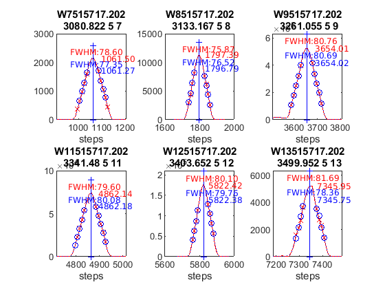

datefile =
737598
now:W1017319.202
now:W3017319.202
now:W7017319.202
now:W8017319.202
now:W9017319.202
now:W11017319.202
now:W12017319.202
now:W1117319.202
now:W3117319.202
now:W7117319.202
now:W8117319.202
now:W9117319.202
now:W11117319.202
now:W12117319.202
now:W13117319.202
now:W3217319.202
now:W7217319.202
now:W8217319.202
now:W9217319.202
now:W11217319.202
now:W12217319.202
now:W13217319.202
now:W3317319.202
now:W7317319.202
now:W8317319.202
now:W9317319.202
now:W11317319.202
now:W12317319.202
now:W13317319.202
now:W7417319.202
now:W8417319.202
now:W9417319.202
now:W11417319.202
now:W12417319.202
now:W13417319.202
now:W7517319.202
now:W8517319.202
now:W9517319.202
now:W11517319.202
now:W12517319.202
now:W13517319.202
now:W14517319.202
lines_dsp_17219__202
saving alldsp to DSP/202_19_173/alldsp_17219_202.202
eliminamos la linea slit 1 2967.280000 -0.163377
saving normaldsp to DSP/202_19_173/dspnorm_17219_202.202 as brewer compatible file
Use polyval(pwl(2,:),wl) for calculating normal wavelengths
Saving ozonecoeffs to DSP/202_19_173/opos17219_202.202
281 WL(A) 3031.29 3062.48 3099.93 3134.50 3167.56 3199.62
Res(A) 11.25 11.14 10.86 11.17 11.03 10.85
O3abs(1/cm) 2.6220 1.7910 1.0071 0.6780 0.3749 0.2962 O3: 0.3468
Daumt O3abs(1/cm) 2.6289 1.7849 0.9992 0.6712 0.3682 0.2962 O3: 0.3570
So2abs(1/cm) 3.5971 5.4613 2.3509 1.9833 1.0470 0.6229
Bremen O3abs(1/cm) 2.6318 1.7884 1.0048 0.6809 0.3734 0.2974 O3: 0.3485
Nicolet 1e4*Rayabs(1/cm) 5055.2 4835.9 4588.3 4374.1 4181.1 4004.1 R: 9.9160
Bates(fix) 1e4*Rayabs(1/cm) 0.0 4870.0 4620.0 4410.0 4220.0 4040.0 R: -1.0000
Bodhaine 1e4*Rayabs(1/cm) 5051.7 4833.9 4587.8 4374.8 4182.6 4006.4 R: 9.5394
I0(mW m^-2nm^-1) 11732.27 9425.93 7391.59 4923.77 4070.74 3240.55 ETC: 1483
Ozone offset due to Rayleigh (RayCOeff/O3Coeff): -2.9 DU
Ozone offset due to Rayleigh (Bodhaine): -3.0 DU
Ratio Ozone for So2(A3)= 1.1640, So2/O3(A2)= 2.6266
O3 factor from Bass & Paur to Daumont = 0.9713
O3 factor from Bass & Paur to Bremen = 0.9950
282 WL(A) 3031.36 3062.55 3100.01 3134.57 3167.63 3199.68
Res(A) 11.25 11.14 10.86 11.17 11.03 10.85
O3abs(1/cm) 2.6193 1.7895 1.0069 0.6778 0.3749 0.2957 O3: 0.3459
Daumt O3abs(1/cm) 2.6262 1.7836 0.9988 0.6712 0.3682 0.2959 O3: 0.3563
So2abs(1/cm) 3.5758 5.4887 2.3574 1.9719 1.0482 0.6208
Bremen O3abs(1/cm) 2.6291 1.7871 1.0044 0.6809 0.3733 0.2971 O3: 0.3477
Nicolet 1e4*Rayabs(1/cm) 5054.6 4835.4 4587.9 4373.7 4180.7 4003.7 R: 9.9140
Bates(fix) 1e4*Rayabs(1/cm) 0.0 4870.0 4620.0 4410.0 4220.0 4040.0 R: -1.0000
Bodhaine 1e4*Rayabs(1/cm) 5051.1 4833.4 4587.4 4374.4 4182.2 4006.0 R: 9.5426
I0(mW m^-2nm^-1) 11726.06 9419.69 7366.59 4919.93 4060.89 3231.01 ETC: 1465
Ozone offset due to Rayleigh (RayCOeff/O3Coeff): -2.9 DU
Ozone offset due to Rayleigh (Bodhaine): -3.0 DU
Ratio Ozone for So2(A3)= 1.1611, So2/O3(A2)= 2.6465
O3 factor from Bass & Paur to Daumont = 0.9710
O3 factor from Bass & Paur to Bremen = 0.9948
283 WL(A) 3031.43 3062.62 3100.08 3134.64 3167.70 3199.75
Res(A) 11.25 11.14 10.86 11.17 11.03 10.85
O3abs(1/cm) 2.6165 1.7880 1.0066 0.6776 0.3749 0.2953 O3: 0.3450
Daumt O3abs(1/cm) 2.6234 1.7823 0.9985 0.6712 0.3682 0.2956 O3: 0.3554
So2abs(1/cm) 3.5551 5.5142 2.3640 1.9606 1.0494 0.6188
Bremen O3abs(1/cm) 2.6265 1.7857 1.0041 0.6807 0.3733 0.2968 O3: 0.3469
Nicolet 1e4*Rayabs(1/cm) 5054.1 4834.9 4587.4 4373.3 4180.3 4003.4 R: 9.9121
Bates(fix) 1e4*Rayabs(1/cm) 0.0 4870.0 4620.0 4410.0 4220.0 4040.0 R: -1.0000
Bodhaine 1e4*Rayabs(1/cm) 5050.6 4832.9 4586.9 4374.0 4181.8 4005.7 R: 9.5386
I0(mW m^-2nm^-1) 11719.85 9413.45 7341.74 4916.09 4051.07 3221.49 ETC: 1448
Ozone offset due to Rayleigh (RayCOeff/O3Coeff): -2.9 DU
Ozone offset due to Rayleigh (Bodhaine): -3.1 DU
Ratio Ozone for So2(A3)= 1.1582, So2/O3(A2)= 2.6649
O3 factor from Bass & Paur to Daumont = 0.9706
O3 factor from Bass & Paur to Bremen = 0.9946
284 WL(A) 3031.50 3062.69 3100.15 3134.71 3167.77 3199.82
Res(A) 11.25 11.14 10.86 11.17 11.03 10.85
O3abs(1/cm) 2.6137 1.7866 1.0063 0.6774 0.3749 0.2948 O3: 0.3439
Daumt O3abs(1/cm) 2.6206 1.7810 0.9981 0.6711 0.3681 0.2953 O3: 0.3546
So2abs(1/cm) 3.5363 5.5388 2.3707 1.9493 1.0507 0.6166
Bremen O3abs(1/cm) 2.6238 1.7842 1.0037 0.6806 0.3733 0.2964 O3: 0.3460
Nicolet 1e4*Rayabs(1/cm) 5053.6 4834.4 4587.0 4372.9 4179.9 4003.0 R: 9.9101
Bates(fix) 1e4*Rayabs(1/cm) 0.0 4870.0 4620.0 4410.0 4220.0 4040.0 R: -1.0000
Bodhaine 1e4*Rayabs(1/cm) 5050.1 4832.4 4586.5 4373.5 4181.4 4005.3 R: 9.5332
I0(mW m^-2nm^-1) 11713.65 9407.22 7317.03 4912.26 4041.26 3211.99 ETC: 1431
Ozone offset due to Rayleigh (RayCOeff/O3Coeff): -2.9 DU
Ozone offset due to Rayleigh (Bodhaine): -3.1 DU
Ratio Ozone for So2(A3)= 1.1552, So2/O3(A2)= 2.6827
O3 factor from Bass & Paur to Daumont = 0.9700
O3 factor from Bass & Paur to Bremen = 0.9941
285 WL(A) 3031.58 3062.76 3100.22 3134.78 3167.84 3199.89
Res(A) 11.25 11.14 10.86 11.17 11.03 10.85
O3abs(1/cm) 2.6109 1.7852 1.0060 0.6772 0.3750 0.2943 O3: 0.3429
Daumt O3abs(1/cm) 2.6179 1.7796 0.9978 0.6710 0.3682 0.2949 O3: 0.3537
So2abs(1/cm) 3.5174 5.5634 2.3779 1.9381 1.0519 0.6145
Bremen O3abs(1/cm) 2.6212 1.7828 1.0034 0.6805 0.3733 0.2960 O3: 0.3451
Nicolet 1e4*Rayabs(1/cm) 5053.1 4833.9 4586.5 4372.5 4179.5 4002.6 R: 9.9082
Bates(fix) 1e4*Rayabs(1/cm) 0.0 4870.0 4620.0 4410.0 4220.0 4040.0 R: -1.0000
Bodhaine 1e4*Rayabs(1/cm) 5049.6 4831.9 4586.0 4373.1 4181.0 4004.9 R: 9.5354
I0(mW m^-2nm^-1) 11707.46 9401.00 7292.45 4908.43 4031.47 3202.51 ETC: 1413
Ozone offset due to Rayleigh (RayCOeff/O3Coeff): -2.9 DU
Ozone offset due to Rayleigh (Bodhaine): -3.1 DU
Ratio Ozone for So2(A3)= 1.1521, So2/O3(A2)= 2.7008
O3 factor from Bass & Paur to Daumont = 0.9693
O3 factor from Bass & Paur to Bremen = 0.9936
286 WL(A) 3031.65 3062.84 3100.29 3134.85 3167.90 3199.96
Res(A) 11.24 11.14 10.86 11.17 11.03 10.85
O3abs(1/cm) 2.6081 1.7837 1.0057 0.6769 0.3750 0.2939 O3: 0.3418
Daumt O3abs(1/cm) 2.6153 1.7783 0.9974 0.6709 0.3682 0.2945 O3: 0.3528
So2abs(1/cm) 3.4987 5.5880 2.3852 1.9265 1.0531 0.6123
Bremen O3abs(1/cm) 2.6186 1.7813 1.0030 0.6803 0.3734 0.2957 O3: 0.3441
Nicolet 1e4*Rayabs(1/cm) 5052.5 4833.4 4586.1 4372.0 4179.1 4002.3 R: 9.9063
Bates(fix) 1e4*Rayabs(1/cm) 0.0 4870.0 4620.0 4410.0 4220.0 4040.0 R: -1.0000
Bodhaine 1e4*Rayabs(1/cm) 5049.1 4831.4 4585.6 4372.7 4180.7 4004.6 R: 9.5344
I0(mW m^-2nm^-1) 11701.28 9394.78 7268.01 4904.60 4021.71 3193.06 ETC: 1396
Ozone offset due to Rayleigh (RayCOeff/O3Coeff): -2.9 DU
Ozone offset due to Rayleigh (Bodhaine): -3.1 DU
Ratio Ozone for So2(A3)= 1.1491, So2/O3(A2)= 2.7189
O3 factor from Bass & Paur to Daumont = 0.9690
O3 factor from Bass & Paur to Bremen = 0.9934
287 WL(A) 3031.72 3062.91 3100.36 3134.92 3167.97 3200.03
Res(A) 11.24 11.14 10.86 11.17 11.03 10.85
O3abs(1/cm) 2.6056 1.7822 1.0054 0.6766 0.3750 0.2934 O3: 0.3408
Daumt O3abs(1/cm) 2.6126 1.7769 0.9971 0.6707 0.3682 0.2942 O3: 0.3518
So2abs(1/cm) 3.4803 5.6106 2.3926 1.9149 1.0543 0.6101
Bremen O3abs(1/cm) 2.6160 1.7799 1.0027 0.6801 0.3734 0.2953 O3: 0.3431
Nicolet 1e4*Rayabs(1/cm) 5052.0 4832.9 4585.6 4371.6 4178.7 4001.9 R: 9.9043
Bates(fix) 1e4*Rayabs(1/cm) 0.0 4870.0 4620.0 4410.0 4220.0 4040.0 R: -1.0000
Bodhaine 1e4*Rayabs(1/cm) 5048.5 4830.9 4585.1 4372.3 4180.3 4004.2 R: 9.5282
I0(mW m^-2nm^-1) 11695.10 9388.58 7243.71 4900.78 4011.97 3183.62 ETC: 1379
Ozone offset due to Rayleigh (RayCOeff/O3Coeff): -2.9 DU
Ozone offset due to Rayleigh (Bodhaine): -3.1 DU
Ratio Ozone for So2(A3)= 1.1460, So2/O3(A2)= 2.7353
O3 factor from Bass & Paur to Daumont = 0.9689
O3 factor from Bass & Paur to Bremen = 0.9934
288 WL(A) 3031.80 3062.98 3100.43 3134.99 3168.04 3200.10
Res(A) 11.24 11.14 10.86 11.17 11.03 10.85
O3abs(1/cm) 2.6031 1.7806 1.0051 0.6763 0.3751 0.2929 O3: 0.3398
Daumt O3abs(1/cm) 2.6100 1.7755 0.9968 0.6705 0.3682 0.2938 O3: 0.3508
So2abs(1/cm) 3.4639 5.6321 2.4001 1.9035 1.0555 0.6078
Bremen O3abs(1/cm) 2.6135 1.7784 1.0023 0.6799 0.3734 0.2948 O3: 0.3421
Nicolet 1e4*Rayabs(1/cm) 5051.5 4832.4 4585.2 4371.2 4178.3 4001.5 R: 9.9024
Bates(fix) 1e4*Rayabs(1/cm) 0.0 4870.0 4620.0 4410.0 4220.0 4040.0 R: -1.0000
Bodhaine 1e4*Rayabs(1/cm) 5048.0 4830.5 4584.7 4371.8 4179.9 4003.8 R: 9.5288
I0(mW m^-2nm^-1) 11688.94 9382.38 7220.28 4896.96 4002.25 3174.20 ETC: 1363
Ozone offset due to Rayleigh (RayCOeff/O3Coeff): -2.9 DU
Ozone offset due to Rayleigh (Bodhaine): -3.1 DU
Ratio Ozone for So2(A3)= 1.1427, So2/O3(A2)= 2.7512
O3 factor from Bass & Paur to Daumont = 0.9687
O3 factor from Bass & Paur to Bremen = 0.9934
289 WL(A) 3031.87 3063.05 3100.51 3135.06 3168.11 3200.17
Res(A) 11.24 11.14 10.86 11.17 11.03 10.85
O3abs(1/cm) 2.6006 1.7790 1.0049 0.6759 0.3751 0.2924 O3: 0.3387
Daumt O3abs(1/cm) 2.6074 1.7741 0.9964 0.6704 0.3683 0.2933 O3: 0.3497
So2abs(1/cm) 3.4475 5.6535 2.4079 1.8921 1.0568 0.6055
Bremen O3abs(1/cm) 2.6110 1.7768 1.0020 0.6797 0.3735 0.2944 O3: 0.3410
Nicolet 1e4*Rayabs(1/cm) 5050.9 4831.9 4584.7 4370.8 4177.9 4001.2 R: 9.9005
Bates(fix) 1e4*Rayabs(1/cm) 0.0 4870.0 4620.0 4410.0 4220.0 4040.0 R: -1.0000
Bodhaine 1e4*Rayabs(1/cm) 5047.5 4830.0 4584.2 4371.4 4179.5 4003.4 R: 9.5301
I0(mW m^-2nm^-1) 11682.78 9376.20 7205.55 4893.14 3992.55 3164.80 ETC: 1356
Ozone offset due to Rayleigh (RayCOeff/O3Coeff): -2.9 DU
Ozone offset due to Rayleigh (Bodhaine): -3.1 DU
Ratio Ozone for So2(A3)= 1.1390, So2/O3(A2)= 2.7680
O3 factor from Bass & Paur to Daumont = 0.9684
O3 factor from Bass & Paur to Bremen = 0.9932
290 WL(A) 3031.94 3063.12 3100.58 3135.13 3168.18 3200.24
Res(A) 11.24 11.14 10.86 11.17 11.03 10.85
O3abs(1/cm) 2.5980 1.7773 1.0046 0.6755 0.3752 0.2918 O3: 0.3375
Daumt O3abs(1/cm) 2.6048 1.7726 0.9961 0.6701 0.3683 0.2929 O3: 0.3486
So2abs(1/cm) 3.4313 5.6749 2.4161 1.8805 1.0579 0.6032
Bremen O3abs(1/cm) 2.6085 1.7753 1.0017 0.6794 0.3736 0.2940 O3: 0.3399
Nicolet 1e4*Rayabs(1/cm) 5050.4 4831.5 4584.2 4370.3 4177.5 4000.8 R: 9.8985
Bates(fix) 1e4*Rayabs(1/cm) 0.0 4870.0 4620.0 4410.0 4220.0 4040.0 R: -1.0000
Bodhaine 1e4*Rayabs(1/cm) 5047.0 4829.5 4583.8 4371.0 4179.1 4003.1 R: 9.5233
I0(mW m^-2nm^-1) 11676.63 9370.02 7191.24 4889.33 3982.87 3155.42 ETC: 1348
Ozone offset due to Rayleigh (RayCOeff/O3Coeff): -2.9 DU
Ozone offset due to Rayleigh (Bodhaine): -3.1 DU
Ratio Ozone for So2(A3)= 1.1353, So2/O3(A2)= 2.7851
O3 factor from Bass & Paur to Daumont = 0.9681
O3 factor from Bass & Paur to Bremen = 0.9930
291 WL(A) 3032.01 3063.20 3100.65 3135.20 3168.25 3200.30
Res(A) 11.24 11.14 10.86 11.17 11.02 10.85
O3abs(1/cm) 2.5954 1.7758 1.0043 0.6751 0.3753 0.2912 O3: 0.3362
Daumt O3abs(1/cm) 2.6023 1.7712 0.9957 0.6699 0.3684 0.2925 O3: 0.3475
So2abs(1/cm) 3.4155 5.6946 2.4243 1.8686 1.0591 0.6008
Bremen O3abs(1/cm) 2.6060 1.7737 1.0013 0.6791 0.3736 0.2935 O3: 0.3387
Nicolet 1e4*Rayabs(1/cm) 5049.9 4831.0 4583.8 4369.9 4177.1 4000.4 R: 9.8966
Bates(fix) 1e4*Rayabs(1/cm) 0.0 4870.0 4620.0 4410.0 4220.0 4040.0 R: -1.0000
Bodhaine 1e4*Rayabs(1/cm) 5046.4 4829.0 4583.3 4370.6 4178.7 4002.7 R: 9.5228
I0(mW m^-2nm^-1) 11670.49 9363.85 7177.32 4885.52 3973.21 3146.06 ETC: 1342
Ozone offset due to Rayleigh (RayCOeff/O3Coeff): -2.9 DU
Ozone offset due to Rayleigh (Bodhaine): -3.1 DU
Ratio Ozone for So2(A3)= 1.1315, So2/O3(A2)= 2.8009
O3 factor from Bass & Paur to Daumont = 0.9675
O3 factor from Bass & Paur to Bremen = 0.9926
saving powfiu7 to DSP/202_19_173/dsp_17219_202.202
freecoef =
3
freecoef =
8
freecoef =
8
freecoef =
8
freecoef =
8
freecoef =
8
freecoef =
8
freecoef =
8
freecoef =
8
freecoef =
8
saving data to file:DSP/202_19_173/dsp_17219_202.202
Use brstps2 to calculate steps and wavelengths
Saving ozonecoeffs to DSP/202_19_173/opos_pow7_17219_202.202
281 WL(A) 3031.40 3062.47 3099.94 3134.49 3167.49 3199.48
Res(A) 11.25 11.14 10.86 11.17 11.02 10.85
O3abs(1/cm) 2.6178 1.7910 1.0071 0.6780 0.3749 0.2969 O3: 0.3480
Daumt O3abs(1/cm) 2.6246 1.7850 0.9992 0.6712 0.3683 0.2968 O3: 0.3579
So2abs(1/cm) 3.5646 5.4594 2.3510 1.9836 1.0458 0.6269
Bremen O3abs(1/cm) 2.6277 1.7885 1.0048 0.6809 0.3734 0.2980 O3: 0.3495
Nicolet 1e4*Rayabs(1/cm) 5054.3 4835.9 4588.3 4374.2 4181.4 4004.9 R: 10.3988
Bates(fix) 1e4*Rayabs(1/cm) 0.0 4870.0 4620.0 4410.0 4220.0 4040.0 R: -1.0000
Bodhaine 1e4*Rayabs(1/cm) 5050.9 4833.9 4587.8 4374.8 4183.0 4007.1 R: 10.0237
I0(mW m^-2nm^-1) 11722.61 9426.33 7391.29 4923.86 4079.64 3253.06 ETC: 1484
Ozone offset due to Rayleigh (RayCOeff/O3Coeff): -3.0 DU
Ozone offset due to Rayleigh (Bodhaine): -3.2 DU
Ratio Ozone for So2(A3)= 1.1664, So2/O3(A2)= 2.6345
O3 factor from Bass & Paur to Daumont = 0.9725
O3 factor from Bass & Paur to Bremen = 0.9958
282 WL(A) 3031.47 3062.54 3100.01 3134.56 3167.56 3199.54
Res(A) 11.25 11.14 10.86 11.17 11.02 10.85
O3abs(1/cm) 2.6150 1.7895 1.0069 0.6778 0.3749 0.2966 O3: 0.3473
Daumt O3abs(1/cm) 2.6219 1.7837 0.9988 0.6712 0.3682 0.2965 O3: 0.3572
So2abs(1/cm) 3.5450 5.4869 2.3575 1.9722 1.0471 0.6249
Bremen O3abs(1/cm) 2.6250 1.7872 1.0044 0.6809 0.3733 0.2977 O3: 0.3488
Nicolet 1e4*Rayabs(1/cm) 5053.8 4835.4 4587.9 4373.7 4181.0 4004.5 R: 10.3963
Bates(fix) 1e4*Rayabs(1/cm) 0.0 4870.0 4620.0 4410.0 4220.0 4040.0 R: -1.0000
Bodhaine 1e4*Rayabs(1/cm) 5050.3 4833.4 4587.4 4374.4 4182.6 4006.8 R: 10.0201
I0(mW m^-2nm^-1) 11716.41 9420.08 7366.30 4920.02 4069.77 3248.26 ETC: 1475
Ozone offset due to Rayleigh (RayCOeff/O3Coeff): -3.0 DU
Ozone offset due to Rayleigh (Bodhaine): -3.2 DU
Ratio Ozone for So2(A3)= 1.1639, So2/O3(A2)= 2.6541
O3 factor from Bass & Paur to Daumont = 0.9723
O3 factor from Bass & Paur to Bremen = 0.9958
283 WL(A) 3031.54 3062.61 3100.08 3134.63 3167.63 3199.61
Res(A) 11.25 11.14 10.86 11.17 11.02 10.85
O3abs(1/cm) 2.6122 1.7881 1.0066 0.6776 0.3749 0.2962 O3: 0.3465
Daumt O3abs(1/cm) 2.6192 1.7824 0.9985 0.6712 0.3682 0.2962 O3: 0.3565
So2abs(1/cm) 3.5261 5.5125 2.3641 1.9608 1.0483 0.6230
Bremen O3abs(1/cm) 2.6224 1.7858 1.0041 0.6808 0.3733 0.2974 O3: 0.3480
Nicolet 1e4*Rayabs(1/cm) 5053.3 4834.9 4587.4 4373.3 4180.6 4004.1 R: 10.3938
Bates(fix) 1e4*Rayabs(1/cm) 0.0 4870.0 4620.0 4410.0 4220.0 4040.0 R: -1.0000
Bodhaine 1e4*Rayabs(1/cm) 5049.8 4832.9 4586.9 4374.0 4182.2 4006.4 R: 10.0189
I0(mW m^-2nm^-1) 11710.21 9413.84 7341.45 4916.19 4059.91 3240.87 ETC: 1461
Ozone offset due to Rayleigh (RayCOeff/O3Coeff): -3.0 DU
Ozone offset due to Rayleigh (Bodhaine): -3.2 DU
Ratio Ozone for So2(A3)= 1.1612, So2/O3(A2)= 2.6723
O3 factor from Bass & Paur to Daumont = 0.9720
O3 factor from Bass & Paur to Bremen = 0.9957
284 WL(A) 3031.62 3062.69 3100.15 3134.70 3167.70 3199.68
Res(A) 11.25 11.14 10.86 11.17 11.02 10.85
O3abs(1/cm) 2.6093 1.7867 1.0063 0.6774 0.3749 0.2958 O3: 0.3456
Daumt O3abs(1/cm) 2.6165 1.7811 0.9981 0.6711 0.3681 0.2959 O3: 0.3557
So2abs(1/cm) 3.5074 5.5371 2.3708 1.9496 1.0496 0.6209
Bremen O3abs(1/cm) 2.6198 1.7843 1.0037 0.6806 0.3733 0.2971 O3: 0.3472
Nicolet 1e4*Rayabs(1/cm) 5052.8 4834.4 4587.0 4372.9 4180.2 4003.7 R: 10.3914
Bates(fix) 1e4*Rayabs(1/cm) 0.0 4870.0 4620.0 4410.0 4220.0 4040.0 R: -1.0000
Bodhaine 1e4*Rayabs(1/cm) 5049.3 4832.4 4586.5 4373.5 4181.8 4006.0 R: 10.0180
I0(mW m^-2nm^-1) 11704.03 9407.61 7316.74 4912.36 4050.08 3231.32 ETC: 1444
Ozone offset due to Rayleigh (RayCOeff/O3Coeff): -3.0 DU
Ozone offset due to Rayleigh (Bodhaine): -3.2 DU
Ratio Ozone for So2(A3)= 1.1584, So2/O3(A2)= 2.6897
O3 factor from Bass & Paur to Daumont = 0.9715
O3 factor from Bass & Paur to Bremen = 0.9953
285 WL(A) 3031.69 3062.76 3100.22 3134.78 3167.77 3199.75
Res(A) 11.25 11.14 10.86 11.17 11.02 10.85
O3abs(1/cm) 2.6067 1.7852 1.0060 0.6772 0.3749 0.2953 O3: 0.3446
Daumt O3abs(1/cm) 2.6138 1.7797 0.9978 0.6710 0.3681 0.2956 O3: 0.3549
So2abs(1/cm) 3.4888 5.5617 2.3780 1.9384 1.0508 0.6188
Bremen O3abs(1/cm) 2.6172 1.7829 1.0034 0.6805 0.3733 0.2968 O3: 0.3463
Nicolet 1e4*Rayabs(1/cm) 5052.2 4833.9 4586.5 4372.5 4179.8 4003.4 R: 10.3889
Bates(fix) 1e4*Rayabs(1/cm) 0.0 4870.0 4620.0 4410.0 4220.0 4040.0 R: -1.0000
Bodhaine 1e4*Rayabs(1/cm) 5048.8 4832.0 4586.0 4373.1 4181.4 4005.7 R: 10.0126
I0(mW m^-2nm^-1) 11697.85 9401.39 7292.16 4908.53 4040.27 3221.80 ETC: 1426
Ozone offset due to Rayleigh (RayCOeff/O3Coeff): -3.0 DU
Ozone offset due to Rayleigh (Bodhaine): -3.2 DU
Ratio Ozone for So2(A3)= 1.1555, So2/O3(A2)= 2.7076
O3 factor from Bass & Paur to Daumont = 0.9709
O3 factor from Bass & Paur to Bremen = 0.9949
286 WL(A) 3031.76 3062.83 3100.29 3134.85 3167.84 3199.82
Res(A) 11.25 11.14 10.86 11.17 11.02 10.85
O3abs(1/cm) 2.6042 1.7838 1.0057 0.6769 0.3750 0.2948 O3: 0.3435
Daumt O3abs(1/cm) 2.6112 1.7784 0.9974 0.6709 0.3681 0.2953 O3: 0.3540
So2abs(1/cm) 3.4715 5.5863 2.3853 1.9268 1.0520 0.6167
Bremen O3abs(1/cm) 2.6147 1.7814 1.0030 0.6803 0.3733 0.2964 O3: 0.3455
Nicolet 1e4*Rayabs(1/cm) 5051.7 4833.5 4586.1 4372.0 4179.4 4003.0 R: 10.3864
Bates(fix) 1e4*Rayabs(1/cm) 0.0 4870.0 4620.0 4410.0 4220.0 4040.0 R: -1.0000
Bodhaine 1e4*Rayabs(1/cm) 5048.2 4831.5 4585.6 4372.7 4181.0 4005.3 R: 10.0103
I0(mW m^-2nm^-1) 11691.68 9395.18 7267.73 4904.70 4030.49 3212.31 ETC: 1409
Ozone offset due to Rayleigh (RayCOeff/O3Coeff): -3.0 DU
Ozone offset due to Rayleigh (Bodhaine): -3.2 DU
Ratio Ozone for So2(A3)= 1.1524, So2/O3(A2)= 2.7258
O3 factor from Bass & Paur to Daumont = 0.9703
O3 factor from Bass & Paur to Bremen = 0.9944
287 WL(A) 3031.84 3062.90 3100.36 3134.92 3167.91 3199.89
Res(A) 11.25 11.14 10.86 11.17 11.02 10.85
O3abs(1/cm) 2.6018 1.7823 1.0054 0.6766 0.3750 0.2944 O3: 0.3425
Daumt O3abs(1/cm) 2.6086 1.7770 0.9971 0.6707 0.3682 0.2949 O3: 0.3532
So2abs(1/cm) 3.4550 5.6092 2.3927 1.9152 1.0533 0.6146
Bremen O3abs(1/cm) 2.6121 1.7800 1.0027 0.6801 0.3734 0.2961 O3: 0.3445
Nicolet 1e4*Rayabs(1/cm) 5051.2 4833.0 4585.6 4371.6 4179.0 4002.6 R: 10.3840
Bates(fix) 1e4*Rayabs(1/cm) 0.0 4870.0 4620.0 4410.0 4220.0 4040.0 R: -1.0000
Bodhaine 1e4*Rayabs(1/cm) 5047.7 4831.0 4585.1 4372.3 4180.6 4004.9 R: 10.0119
I0(mW m^-2nm^-1) 11685.53 9388.97 7243.43 4900.88 4020.72 3202.83 ETC: 1392
Ozone offset due to Rayleigh (RayCOeff/O3Coeff): -3.0 DU
Ozone offset due to Rayleigh (Bodhaine): -3.2 DU
Ratio Ozone for So2(A3)= 1.1493, So2/O3(A2)= 2.7427
O3 factor from Bass & Paur to Daumont = 0.9698
O3 factor from Bass & Paur to Bremen = 0.9941
288 WL(A) 3031.91 3062.98 3100.44 3134.99 3167.98 3199.96
Res(A) 11.25 11.14 10.86 11.17 11.02 10.85
O3abs(1/cm) 2.5992 1.7807 1.0051 0.6763 0.3750 0.2939 O3: 0.3415
Daumt O3abs(1/cm) 2.6060 1.7756 0.9968 0.6706 0.3682 0.2946 O3: 0.3522
So2abs(1/cm) 3.4388 5.6306 2.4002 1.9038 1.0545 0.6124
Bremen O3abs(1/cm) 2.6096 1.7784 1.0023 0.6799 0.3734 0.2957 O3: 0.3436
Nicolet 1e4*Rayabs(1/cm) 5050.7 4832.5 4585.1 4371.2 4178.7 4002.3 R: 10.3815
Bates(fix) 1e4*Rayabs(1/cm) 0.0 4870.0 4620.0 4410.0 4220.0 4040.0 R: -1.0000
Bodhaine 1e4*Rayabs(1/cm) 5047.2 4830.5 4584.7 4371.9 4180.2 4004.6 R: 10.0058
I0(mW m^-2nm^-1) 11679.37 9382.78 7220.08 4897.06 4010.98 3193.37 ETC: 1376
Ozone offset due to Rayleigh (RayCOeff/O3Coeff): -3.0 DU
Ozone offset due to Rayleigh (Bodhaine): -3.2 DU
Ratio Ozone for So2(A3)= 1.1461, So2/O3(A2)= 2.7586
O3 factor from Bass & Paur to Daumont = 0.9696
O3 factor from Bass & Paur to Bremen = 0.9940
289 WL(A) 3031.98 3063.05 3100.51 3135.06 3168.05 3200.03
Res(A) 11.25 11.14 10.86 11.17 11.02 10.85
O3abs(1/cm) 2.5966 1.7791 1.0049 0.6759 0.3751 0.2934 O3: 0.3406
Daumt O3abs(1/cm) 2.6034 1.7742 0.9964 0.6704 0.3682 0.2942 O3: 0.3512
So2abs(1/cm) 3.4228 5.6520 2.4080 1.8923 1.0557 0.6102
Bremen O3abs(1/cm) 2.6072 1.7769 1.0020 0.6797 0.3734 0.2953 O3: 0.3426
Nicolet 1e4*Rayabs(1/cm) 5050.1 4832.0 4584.7 4370.8 4178.3 4001.9 R: 10.3790
Bates(fix) 1e4*Rayabs(1/cm) 0.0 4870.0 4620.0 4410.0 4220.0 4040.0 R: -1.0000
Bodhaine 1e4*Rayabs(1/cm) 5046.7 4830.0 4584.2 4371.4 4179.8 4004.2 R: 10.0025
I0(mW m^-2nm^-1) 11673.23 9376.59 7205.36 4893.24 4001.25 3183.93 ETC: 1369
Ozone offset due to Rayleigh (RayCOeff/O3Coeff): -3.0 DU
Ozone offset due to Rayleigh (Bodhaine): -3.2 DU
Ratio Ozone for So2(A3)= 1.1427, So2/O3(A2)= 2.7749
O3 factor from Bass & Paur to Daumont = 0.9696
O3 factor from Bass & Paur to Bremen = 0.9941
290 WL(A) 3032.05 3063.12 3100.58 3135.13 3168.12 3200.10
Res(A) 11.25 11.14 10.86 11.17 11.02 10.85
O3abs(1/cm) 2.5939 1.7774 1.0046 0.6755 0.3752 0.2930 O3: 0.3395
Daumt O3abs(1/cm) 2.6009 1.7727 0.9961 0.6702 0.3683 0.2938 O3: 0.3502
So2abs(1/cm) 3.4078 5.6734 2.4162 1.8808 1.0569 0.6079
Bremen O3abs(1/cm) 2.6047 1.7754 1.0017 0.6794 0.3735 0.2949 O3: 0.3415
Nicolet 1e4*Rayabs(1/cm) 5049.6 4831.5 4584.2 4370.3 4177.9 4001.5 R: 10.3766
Bates(fix) 1e4*Rayabs(1/cm) 0.0 4870.0 4620.0 4410.0 4220.0 4040.0 R: -1.0000
Bodhaine 1e4*Rayabs(1/cm) 5046.2 4829.5 4583.8 4371.0 4179.4 4003.8 R: 10.0041
I0(mW m^-2nm^-1) 11667.10 9370.41 7191.05 4889.42 3991.55 3174.51 ETC: 1362
Ozone offset due to Rayleigh (RayCOeff/O3Coeff): -3.1 DU
Ozone offset due to Rayleigh (Bodhaine): -3.2 DU
Ratio Ozone for So2(A3)= 1.1392, So2/O3(A2)= 2.7912
O3 factor from Bass & Paur to Daumont = 0.9695
O3 factor from Bass & Paur to Bremen = 0.9941
291 WL(A) 3032.13 3063.19 3100.65 3135.20 3168.19 3200.16
Res(A) 11.25 11.14 10.86 11.17 11.02 10.85
O3abs(1/cm) 2.5913 1.7759 1.0043 0.6752 0.3752 0.2924 O3: 0.3384
Daumt O3abs(1/cm) 2.5984 1.7713 0.9957 0.6699 0.3683 0.2934 O3: 0.3492
So2abs(1/cm) 3.3938 5.6934 2.4244 1.8689 1.0580 0.6056
Bremen O3abs(1/cm) 2.6023 1.7738 1.0013 0.6791 0.3736 0.2944 O3: 0.3404
Nicolet 1e4*Rayabs(1/cm) 5049.1 4831.0 4583.8 4369.9 4177.5 4001.2 R: 10.3741
Bates(fix) 1e4*Rayabs(1/cm) 0.0 4870.0 4620.0 4410.0 4220.0 4040.0 R: -1.0000
Bodhaine 1e4*Rayabs(1/cm) 5045.6 4829.0 4583.3 4370.6 4179.0 4003.5 R: 9.9992
I0(mW m^-2nm^-1) 11660.97 9364.24 7177.14 4885.61 3981.87 3165.11 ETC: 1355
Ozone offset due to Rayleigh (RayCOeff/O3Coeff): -3.1 DU
Ozone offset due to Rayleigh (Bodhaine): -3.3 DU
Ratio Ozone for So2(A3)= 1.1357, So2/O3(A2)= 2.8067
O3 factor from Bass & Paur to Daumont = 0.9690
O3 factor from Bass & Paur to Bremen = 0.9939


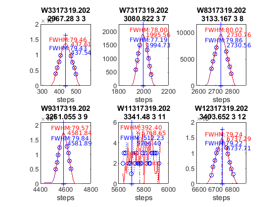


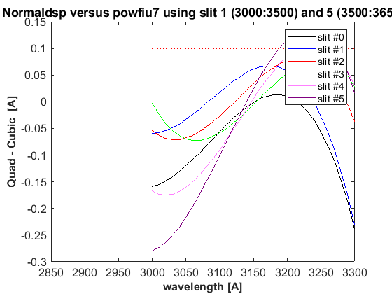

datefile =
737600
now:W1017419.202
now:W3017419.202
now:W7017419.202
now:W8017419.202
now:W9017419.202
now:W11017419.202
now:W12017419.202
now:W1117419.202
now:W3117419.202
now:W7117419.202
now:W8117419.202
now:W9117419.202
now:W11117419.202
now:W12117419.202
now:W13117419.202
now:W3217419.202
now:W7217419.202
now:W8217419.202
now:W9217419.202
now:W11217419.202
now:W12217419.202
now:W13217419.202
now:W3317419.202
now:W7317419.202
now:W8317419.202
now:W9317419.202
now:W11317419.202
now:W12317419.202
now:W13317419.202
now:W7417419.202
now:W8417419.202
now:W9417419.202
now:W11417419.202
now:W12417419.202
now:W13417419.202
now:W7517419.202
now:W8517419.202
now:W9517419.202
now:W11517419.202
now:W12517419.202
now:W13517419.202
now:W14517419.202
lines_dsp_17419__202
saving alldsp to DSP/202_19_175/alldsp_17419_202.202
eliminamos la linea slit 1 2967.280000 -0.188007
saving normaldsp to DSP/202_19_175/dspnorm_17419_202.202 as brewer compatible file
Use polyval(pwl(2,:),wl) for calculating normal wavelengths
Saving ozonecoeffs to DSP/202_19_175/opos17419_202.202
281 WL(A) 3031.25 3062.43 3099.89 3134.50 3167.53 3199.59
Res(A) 11.23 11.18 10.86 11.18 11.00 10.84
O3abs(1/cm) 2.6231 1.7917 1.0073 0.6779 0.3749 0.2963 O3: 0.3473
Daumt O3abs(1/cm) 2.6302 1.7856 0.9994 0.6712 0.3682 0.2963 O3: 0.3575
So2abs(1/cm) 3.6059 5.4427 2.3470 1.9820 1.0465 0.6236
Bremen O3abs(1/cm) 2.6330 1.7891 1.0050 0.6809 0.3733 0.2975 O3: 0.3490
Nicolet 1e4*Rayabs(1/cm) 5055.4 4836.2 4588.6 4374.1 4181.2 4004.2 R: 10.0869
Bates(fix) 1e4*Rayabs(1/cm) 0.0 4870.0 4620.0 4410.0 4220.0 4040.0 R: -1.0000
Bodhaine 1e4*Rayabs(1/cm) 5051.9 4834.2 4588.1 4374.7 4182.8 4006.5 R: 9.7126
I0(mW m^-2nm^-1) 11735.26 9429.44 7406.48 4923.33 4074.37 3243.52 ETC: 1495
Ozone offset due to Rayleigh (RayCOeff/O3Coeff): -2.9 DU
Ozone offset due to Rayleigh (Bodhaine): -3.1 DU
Ratio Ozone for So2(A3)= 1.1653, So2/O3(A2)= 2.6111
O3 factor from Bass & Paur to Daumont = 0.9715
O3 factor from Bass & Paur to Bremen = 0.9951
282 WL(A) 3031.33 3062.51 3099.96 3134.57 3167.60 3199.66
Res(A) 11.23 11.18 10.86 11.18 11.00 10.84
O3abs(1/cm) 2.6205 1.7902 1.0070 0.6778 0.3749 0.2959 O3: 0.3464
Daumt O3abs(1/cm) 2.6274 1.7843 0.9991 0.6712 0.3682 0.2960 O3: 0.3567
So2abs(1/cm) 3.5847 5.4699 2.3535 1.9705 1.0478 0.6215
Bremen O3abs(1/cm) 2.6303 1.7878 1.0047 0.6808 0.3733 0.2972 O3: 0.3482
Nicolet 1e4*Rayabs(1/cm) 5054.9 4835.7 4588.2 4373.7 4180.8 4003.8 R: 10.0847
Bates(fix) 1e4*Rayabs(1/cm) 0.0 4870.0 4620.0 4410.0 4220.0 4040.0 R: -1.0000
Bodhaine 1e4*Rayabs(1/cm) 5051.4 4833.7 4587.7 4374.3 4182.4 4006.1 R: 9.7120
I0(mW m^-2nm^-1) 11729.03 9423.24 7381.42 4919.50 4064.48 3233.95 ETC: 1478
Ozone offset due to Rayleigh (RayCOeff/O3Coeff): -2.9 DU
Ozone offset due to Rayleigh (Bodhaine): -3.1 DU
Ratio Ozone for So2(A3)= 1.1624, So2/O3(A2)= 2.6308
O3 factor from Bass & Paur to Daumont = 0.9710
O3 factor from Bass & Paur to Bremen = 0.9947
283 WL(A) 3031.40 3062.58 3100.03 3134.64 3167.67 3199.73
Res(A) 11.23 11.18 10.86 11.18 11.00 10.84
O3abs(1/cm) 2.6178 1.7887 1.0068 0.6776 0.3749 0.2954 O3: 0.3455
Daumt O3abs(1/cm) 2.6246 1.7830 0.9987 0.6711 0.3681 0.2957 O3: 0.3559
So2abs(1/cm) 3.5635 5.4969 2.3601 1.9592 1.0490 0.6194
Bremen O3abs(1/cm) 2.6276 1.7864 1.0043 0.6807 0.3733 0.2969 O3: 0.3474
Nicolet 1e4*Rayabs(1/cm) 5054.3 4835.2 4587.7 4373.3 4180.4 4003.5 R: 10.0825
Bates(fix) 1e4*Rayabs(1/cm) 0.0 4870.0 4620.0 4410.0 4220.0 4040.0 R: -1.0000
Bodhaine 1e4*Rayabs(1/cm) 5050.9 4833.2 4587.2 4373.9 4182.0 4005.8 R: 9.7054
I0(mW m^-2nm^-1) 11722.81 9417.04 7356.50 4915.67 4054.61 3224.40 ETC: 1460
Ozone offset due to Rayleigh (RayCOeff/O3Coeff): -2.9 DU
Ozone offset due to Rayleigh (Bodhaine): -3.1 DU
Ratio Ozone for So2(A3)= 1.1595, So2/O3(A2)= 2.6504
O3 factor from Bass & Paur to Daumont = 0.9707
O3 factor from Bass & Paur to Bremen = 0.9946
284 WL(A) 3031.47 3062.65 3100.11 3134.71 3167.74 3199.80
Res(A) 11.23 11.18 10.86 11.18 11.00 10.84
O3abs(1/cm) 2.6149 1.7873 1.0065 0.6774 0.3749 0.2950 O3: 0.3445
Daumt O3abs(1/cm) 2.6218 1.7817 0.9983 0.6711 0.3681 0.2954 O3: 0.3551
So2abs(1/cm) 3.5441 5.5217 2.3667 1.9480 1.0503 0.6173
Bremen O3abs(1/cm) 2.6250 1.7850 1.0039 0.6806 0.3733 0.2965 O3: 0.3465
Nicolet 1e4*Rayabs(1/cm) 5053.8 4834.7 4587.2 4372.8 4180.0 4003.1 R: 10.0803
Bates(fix) 1e4*Rayabs(1/cm) 0.0 4870.0 4620.0 4410.0 4220.0 4040.0 R: -1.0000
Bodhaine 1e4*Rayabs(1/cm) 5050.3 4832.7 4586.8 4373.5 4181.6 4005.4 R: 9.7049
I0(mW m^-2nm^-1) 11716.59 9410.85 7331.72 4911.85 4044.76 3214.87 ETC: 1443
Ozone offset due to Rayleigh (RayCOeff/O3Coeff): -2.9 DU
Ozone offset due to Rayleigh (Bodhaine): -3.1 DU
Ratio Ozone for So2(A3)= 1.1566, So2/O3(A2)= 2.6683
O3 factor from Bass & Paur to Daumont = 0.9702
O3 factor from Bass & Paur to Bremen = 0.9942
285 WL(A) 3031.54 3062.72 3100.18 3134.79 3167.81 3199.87
Res(A) 11.23 11.18 10.86 11.18 11.00 10.84
O3abs(1/cm) 2.6121 1.7859 1.0062 0.6771 0.3749 0.2945 O3: 0.3434
Daumt O3abs(1/cm) 2.6191 1.7803 0.9980 0.6710 0.3681 0.2950 O3: 0.3542
So2abs(1/cm) 3.5252 5.5461 2.3735 1.9368 1.0515 0.6152
Bremen O3abs(1/cm) 2.6223 1.7835 1.0036 0.6804 0.3733 0.2962 O3: 0.3456
Nicolet 1e4*Rayabs(1/cm) 5053.3 4834.2 4586.8 4372.4 4179.6 4002.7 R: 10.0781
Bates(fix) 1e4*Rayabs(1/cm) 0.0 4870.0 4620.0 4410.0 4220.0 4040.0 R: -1.0000
Bodhaine 1e4*Rayabs(1/cm) 5049.8 4832.2 4586.3 4373.1 4181.2 4005.0 R: 9.7063
I0(mW m^-2nm^-1) 11710.38 9404.67 7307.08 4908.02 4034.93 3205.37 ETC: 1425
Ozone offset due to Rayleigh (RayCOeff/O3Coeff): -2.9 DU
Ozone offset due to Rayleigh (Bodhaine): -3.1 DU
Ratio Ozone for So2(A3)= 1.1535, So2/O3(A2)= 2.6860
O3 factor from Bass & Paur to Daumont = 0.9695
O3 factor from Bass & Paur to Bremen = 0.9937
286 WL(A) 3031.62 3062.80 3100.25 3134.86 3167.88 3199.94
Res(A) 11.23 11.18 10.86 11.18 11.00 10.84
O3abs(1/cm) 2.6093 1.7844 1.0059 0.6769 0.3750 0.2940 O3: 0.3424
Daumt O3abs(1/cm) 2.6164 1.7790 0.9976 0.6708 0.3681 0.2947 O3: 0.3533
So2abs(1/cm) 3.5064 5.5705 2.3809 1.9251 1.0527 0.6130
Bremen O3abs(1/cm) 2.6197 1.7821 1.0032 0.6803 0.3733 0.2958 O3: 0.3447
Nicolet 1e4*Rayabs(1/cm) 5052.8 4833.7 4586.3 4372.0 4179.2 4002.4 R: 10.0759
Bates(fix) 1e4*Rayabs(1/cm) 0.0 4870.0 4620.0 4410.0 4220.0 4040.0 R: -1.0000
Bodhaine 1e4*Rayabs(1/cm) 5049.3 4831.7 4585.8 4372.6 4180.8 4004.7 R: 9.7007
I0(mW m^-2nm^-1) 11704.18 9398.50 7282.58 4904.20 4025.12 3195.88 ETC: 1408
Ozone offset due to Rayleigh (RayCOeff/O3Coeff): -2.9 DU
Ozone offset due to Rayleigh (Bodhaine): -3.1 DU
Ratio Ozone for So2(A3)= 1.1505, So2/O3(A2)= 2.7039
O3 factor from Bass & Paur to Daumont = 0.9691
O3 factor from Bass & Paur to Bremen = 0.9934
287 WL(A) 3031.69 3062.87 3100.32 3134.93 3167.95 3200.01
Res(A) 11.23 11.18 10.86 11.18 11.00 10.84
O3abs(1/cm) 2.6067 1.7830 1.0056 0.6766 0.3750 0.2936 O3: 0.3414
Daumt O3abs(1/cm) 2.6138 1.7776 0.9973 0.6707 0.3681 0.2943 O3: 0.3523
So2abs(1/cm) 3.4878 5.5945 2.3882 1.9135 1.0539 0.6108
Bremen O3abs(1/cm) 2.6172 1.7806 1.0029 0.6801 0.3734 0.2954 O3: 0.3437
Nicolet 1e4*Rayabs(1/cm) 5052.2 4833.2 4585.9 4371.6 4178.8 4002.0 R: 10.0736
Bates(fix) 1e4*Rayabs(1/cm) 0.0 4870.0 4620.0 4410.0 4220.0 4040.0 R: -1.0000
Bodhaine 1e4*Rayabs(1/cm) 5048.8 4831.2 4585.4 4372.2 4180.4 4004.3 R: 9.6973
I0(mW m^-2nm^-1) 11697.99 9392.34 7258.21 4900.39 4015.34 3186.41 ETC: 1391
Ozone offset due to Rayleigh (RayCOeff/O3Coeff): -3.0 DU
Ozone offset due to Rayleigh (Bodhaine): -3.1 DU
Ratio Ozone for So2(A3)= 1.1474, So2/O3(A2)= 2.7214
O3 factor from Bass & Paur to Daumont = 0.9689
O3 factor from Bass & Paur to Bremen = 0.9934
288 WL(A) 3031.76 3062.94 3100.39 3135.00 3168.02 3200.08
Res(A) 11.23 11.18 10.86 11.18 11.00 10.84
O3abs(1/cm) 2.6042 1.7815 1.0053 0.6762 0.3750 0.2931 O3: 0.3404
Daumt O3abs(1/cm) 2.6111 1.7762 0.9970 0.6705 0.3682 0.2939 O3: 0.3513
So2abs(1/cm) 3.4706 5.6165 2.3956 1.9021 1.0551 0.6086
Bremen O3abs(1/cm) 2.6146 1.7791 1.0026 0.6799 0.3734 0.2950 O3: 0.3426
Nicolet 1e4*Rayabs(1/cm) 5051.7 4832.7 4585.4 4371.1 4178.4 4001.6 R: 10.0714
Bates(fix) 1e4*Rayabs(1/cm) 0.0 4870.0 4620.0 4410.0 4220.0 4040.0 R: -1.0000
Bodhaine 1e4*Rayabs(1/cm) 5048.2 4830.7 4584.9 4371.8 4180.0 4003.9 R: 9.6992
I0(mW m^-2nm^-1) 11691.81 9386.18 7233.98 4896.57 4005.57 3176.96 ETC: 1374
Ozone offset due to Rayleigh (RayCOeff/O3Coeff): -3.0 DU
Ozone offset due to Rayleigh (Bodhaine): -3.1 DU
Ratio Ozone for So2(A3)= 1.1443, So2/O3(A2)= 2.7374
O3 factor from Bass & Paur to Daumont = 0.9688
O3 factor from Bass & Paur to Bremen = 0.9935
289 WL(A) 3031.84 3063.01 3100.46 3135.07 3168.09 3200.15
Res(A) 11.23 11.18 10.86 11.18 11.00 10.84
O3abs(1/cm) 2.6017 1.7798 1.0050 0.6759 0.3751 0.2926 O3: 0.3392
Daumt O3abs(1/cm) 2.6085 1.7748 0.9966 0.6703 0.3682 0.2935 O3: 0.3503
So2abs(1/cm) 3.4542 5.6377 2.4031 1.8907 1.0563 0.6062
Bremen O3abs(1/cm) 2.6121 1.7776 1.0022 0.6796 0.3735 0.2946 O3: 0.3416
Nicolet 1e4*Rayabs(1/cm) 5051.2 4832.2 4585.0 4370.7 4178.0 4001.3 R: 10.0692
Bates(fix) 1e4*Rayabs(1/cm) 0.0 4870.0 4620.0 4410.0 4220.0 4040.0 R: -1.0000
Bodhaine 1e4*Rayabs(1/cm) 5047.7 4830.2 4584.5 4371.4 4179.6 4003.6 R: 9.6959
I0(mW m^-2nm^-1) 11685.63 9380.04 7214.12 4892.76 3995.83 3167.54 ETC: 1362
Ozone offset due to Rayleigh (RayCOeff/O3Coeff): -3.0 DU
Ozone offset due to Rayleigh (Bodhaine): -3.2 DU
Ratio Ozone for So2(A3)= 1.1406, So2/O3(A2)= 2.7538
O3 factor from Bass & Paur to Daumont = 0.9684
O3 factor from Bass & Paur to Bremen = 0.9932
290 WL(A) 3031.91 3063.08 3100.53 3135.14 3168.16 3200.21
Res(A) 11.23 11.18 10.86 11.18 11.00 10.84
O3abs(1/cm) 2.5992 1.7781 1.0048 0.6755 0.3752 0.2920 O3: 0.3381
Daumt O3abs(1/cm) 2.6059 1.7734 0.9963 0.6701 0.3683 0.2931 O3: 0.3492
So2abs(1/cm) 3.4378 5.6590 2.4113 1.8791 1.0575 0.6039
Bremen O3abs(1/cm) 2.6096 1.7761 1.0019 0.6794 0.3735 0.2941 O3: 0.3405
Nicolet 1e4*Rayabs(1/cm) 5050.7 4831.7 4584.5 4370.3 4177.6 4000.9 R: 10.0670
Bates(fix) 1e4*Rayabs(1/cm) 0.0 4870.0 4620.0 4410.0 4220.0 4040.0 R: -1.0000
Bodhaine 1e4*Rayabs(1/cm) 5047.2 4829.8 4584.0 4371.0 4179.2 4003.2 R: 9.6902
I0(mW m^-2nm^-1) 11679.47 9373.90 7199.57 4888.95 3986.11 3158.13 ETC: 1354
Ozone offset due to Rayleigh (RayCOeff/O3Coeff): -3.0 DU
Ozone offset due to Rayleigh (Bodhaine): -3.2 DU
Ratio Ozone for So2(A3)= 1.1369, So2/O3(A2)= 2.7707
O3 factor from Bass & Paur to Daumont = 0.9682
O3 factor from Bass & Paur to Bremen = 0.9931
291 WL(A) 3031.98 3063.16 3100.61 3135.21 3168.23 3200.28
Res(A) 11.23 11.18 10.86 11.18 11.00 10.84
O3abs(1/cm) 2.5965 1.7765 1.0045 0.6751 0.3753 0.2914 O3: 0.3369
Daumt O3abs(1/cm) 2.6034 1.7719 0.9959 0.6699 0.3683 0.2926 O3: 0.3481
So2abs(1/cm) 3.4218 5.6797 2.4194 1.8673 1.0587 0.6016
Bremen O3abs(1/cm) 2.6071 1.7745 1.0015 0.6791 0.3736 0.2937 O3: 0.3393
Nicolet 1e4*Rayabs(1/cm) 5050.1 4831.2 4584.1 4369.9 4177.3 4000.5 R: 10.0648
Bates(fix) 1e4*Rayabs(1/cm) 0.0 4870.0 4620.0 4410.0 4220.0 4040.0 R: -1.0000
Bodhaine 1e4*Rayabs(1/cm) 5046.7 4829.3 4583.6 4370.5 4178.8 4002.8 R: 9.6919
I0(mW m^-2nm^-1) 11673.31 9367.77 7185.43 4885.15 3976.41 3148.74 ETC: 1348
Ozone offset due to Rayleigh (RayCOeff/O3Coeff): -3.0 DU
Ozone offset due to Rayleigh (Bodhaine): -3.2 DU
Ratio Ozone for So2(A3)= 1.1331, So2/O3(A2)= 2.7874
O3 factor from Bass & Paur to Daumont = 0.9677
O3 factor from Bass & Paur to Bremen = 0.9927
saving powfiu7 to DSP/202_19_175/dsp_17419_202.202
freecoef =
3
freecoef =
8
freecoef =
8
freecoef =
8
freecoef =
8
freecoef =
8
freecoef =
8
freecoef =
8
freecoef =
8
freecoef =
8
saving data to file:DSP/202_19_175/dsp_17419_202.202
Use brstps2 to calculate steps and wavelengths
Saving ozonecoeffs to DSP/202_19_175/opos_pow7_17419_202.202
281 WL(A) 3031.38 3062.43 3099.91 3134.48 3167.49 3199.46
Res(A) 11.24 11.19 10.86 11.18 11.00 10.84
O3abs(1/cm) 2.6186 1.7918 1.0073 0.6780 0.3749 0.2970 O3: 0.3484
Daumt O3abs(1/cm) 2.6254 1.7857 0.9993 0.6712 0.3682 0.2968 O3: 0.3583
So2abs(1/cm) 3.5697 5.4397 2.3483 1.9853 1.0458 0.6275
Bremen O3abs(1/cm) 2.6284 1.7893 1.0049 0.6809 0.3733 0.2981 O3: 0.3499
Nicolet 1e4*Rayabs(1/cm) 5054.5 4836.2 4588.5 4374.2 4181.4 4005.0 R: 10.6539
Bates(fix) 1e4*Rayabs(1/cm) 0.0 4870.0 4620.0 4410.0 4220.0 4040.0 R: -1.0000
Bodhaine 1e4*Rayabs(1/cm) 5051.0 4834.2 4588.0 4374.9 4183.0 4007.2 R: 10.2782
I0(mW m^-2nm^-1) 11724.58 9430.08 7401.31 4924.47 4080.46 3254.03 ETC: 1494
Ozone offset due to Rayleigh (RayCOeff/O3Coeff): -3.1 DU
Ozone offset due to Rayleigh (Bodhaine): -3.2 DU
Ratio Ozone for So2(A3)= 1.1677, So2/O3(A2)= 2.6166
O3 factor from Bass & Paur to Daumont = 0.9725
O3 factor from Bass & Paur to Bremen = 0.9958
282 WL(A) 3031.45 3062.50 3099.98 3134.55 3167.56 3199.53
Res(A) 11.24 11.19 10.86 11.18 11.00 10.84
O3abs(1/cm) 2.6158 1.7903 1.0070 0.6778 0.3749 0.2967 O3: 0.3477
Daumt O3abs(1/cm) 2.6226 1.7844 0.9990 0.6712 0.3682 0.2966 O3: 0.3576
So2abs(1/cm) 3.5497 5.4670 2.3549 1.9740 1.0470 0.6255
Bremen O3abs(1/cm) 2.6257 1.7879 1.0046 0.6809 0.3733 0.2978 O3: 0.3492
Nicolet 1e4*Rayabs(1/cm) 5054.0 4835.7 4588.1 4373.8 4181.1 4004.6 R: 10.6514
Bates(fix) 1e4*Rayabs(1/cm) 0.0 4870.0 4620.0 4410.0 4220.0 4040.0 R: -1.0000
Bodhaine 1e4*Rayabs(1/cm) 5050.5 4833.7 4587.6 4374.5 4182.6 4006.9 R: 10.2746
I0(mW m^-2nm^-1) 11718.36 9423.88 7376.28 4920.64 4070.55 3249.25 ETC: 1484
Ozone offset due to Rayleigh (RayCOeff/O3Coeff): -3.1 DU
Ozone offset due to Rayleigh (Bodhaine): -3.2 DU
Ratio Ozone for So2(A3)= 1.1651, So2/O3(A2)= 2.6360
O3 factor from Bass & Paur to Daumont = 0.9722
O3 factor from Bass & Paur to Bremen = 0.9957
283 WL(A) 3031.52 3062.57 3100.05 3134.62 3167.63 3199.59
Res(A) 11.24 11.19 10.86 11.18 11.00 10.84
O3abs(1/cm) 2.6129 1.7889 1.0068 0.6776 0.3749 0.2963 O3: 0.3469
Daumt O3abs(1/cm) 2.6199 1.7831 0.9986 0.6712 0.3681 0.2963 O3: 0.3569
So2abs(1/cm) 3.5308 5.4940 2.3615 1.9625 1.0482 0.6236
Bremen O3abs(1/cm) 2.6231 1.7865 1.0042 0.6808 0.3733 0.2975 O3: 0.3484
Nicolet 1e4*Rayabs(1/cm) 5053.4 4835.2 4587.6 4373.4 4180.7 4004.2 R: 10.6489
Bates(fix) 1e4*Rayabs(1/cm) 0.0 4870.0 4620.0 4410.0 4220.0 4040.0 R: -1.0000
Bodhaine 1e4*Rayabs(1/cm) 5050.0 4833.2 4587.1 4374.0 4182.2 4006.5 R: 10.2724
I0(mW m^-2nm^-1) 11712.15 9417.68 7351.39 4916.81 4060.66 3243.54 ETC: 1474
Ozone offset due to Rayleigh (RayCOeff/O3Coeff): -3.1 DU
Ozone offset due to Rayleigh (Bodhaine): -3.2 DU
Ratio Ozone for So2(A3)= 1.1625, So2/O3(A2)= 2.6553
O3 factor from Bass & Paur to Daumont = 0.9721
O3 factor from Bass & Paur to Bremen = 0.9957
284 WL(A) 3031.60 3062.64 3100.12 3134.69 3167.70 3199.66
Res(A) 11.23 11.19 10.86 11.18 11.00 10.84
O3abs(1/cm) 2.6101 1.7874 1.0065 0.6774 0.3749 0.2959 O3: 0.3460
Daumt O3abs(1/cm) 2.6172 1.7818 0.9983 0.6711 0.3681 0.2960 O3: 0.3561
So2abs(1/cm) 3.5120 5.5190 2.3681 1.9513 1.0495 0.6215
Bremen O3abs(1/cm) 2.6205 1.7851 1.0039 0.6806 0.3733 0.2972 O3: 0.3476
Nicolet 1e4*Rayabs(1/cm) 5052.9 4834.7 4587.2 4373.0 4180.3 4003.8 R: 10.6464
Bates(fix) 1e4*Rayabs(1/cm) 0.0 4870.0 4620.0 4410.0 4220.0 4040.0 R: -1.0000
Bodhaine 1e4*Rayabs(1/cm) 5049.4 4832.7 4586.7 4373.6 4181.8 4006.1 R: 10.2705
I0(mW m^-2nm^-1) 11705.95 9411.49 7326.64 4912.98 4050.79 3233.96 ETC: 1456
Ozone offset due to Rayleigh (RayCOeff/O3Coeff): -3.1 DU
Ozone offset due to Rayleigh (Bodhaine): -3.3 DU
Ratio Ozone for So2(A3)= 1.1597, So2/O3(A2)= 2.6731
O3 factor from Bass & Paur to Daumont = 0.9716
O3 factor from Bass & Paur to Bremen = 0.9954
285 WL(A) 3031.67 3062.72 3100.19 3134.76 3167.77 3199.73
Res(A) 11.23 11.18 10.86 11.18 11.00 10.84
O3abs(1/cm) 2.6074 1.7860 1.0061 0.6772 0.3749 0.2955 O3: 0.3450
Daumt O3abs(1/cm) 2.6145 1.7805 0.9979 0.6710 0.3681 0.2957 O3: 0.3553
So2abs(1/cm) 3.4932 5.5434 2.3750 1.9401 1.0507 0.6194
Bremen O3abs(1/cm) 2.6179 1.7837 1.0035 0.6805 0.3733 0.2969 O3: 0.3467
Nicolet 1e4*Rayabs(1/cm) 5052.4 4834.2 4586.7 4372.5 4179.9 4003.5 R: 10.6439
Bates(fix) 1e4*Rayabs(1/cm) 0.0 4870.0 4620.0 4410.0 4220.0 4040.0 R: -1.0000
Bodhaine 1e4*Rayabs(1/cm) 5048.9 4832.3 4586.2 4373.2 4181.4 4005.8 R: 10.2674
I0(mW m^-2nm^-1) 11699.76 9405.31 7302.03 4909.16 4040.95 3224.41 ETC: 1439
Ozone offset due to Rayleigh (RayCOeff/O3Coeff): -3.1 DU
Ozone offset due to Rayleigh (Bodhaine): -3.3 DU
Ratio Ozone for So2(A3)= 1.1568, So2/O3(A2)= 2.6906
O3 factor from Bass & Paur to Daumont = 0.9710
O3 factor from Bass & Paur to Bremen = 0.9949
286 WL(A) 3031.74 3062.79 3100.26 3134.84 3167.84 3199.80
Res(A) 11.23 11.18 10.86 11.18 11.00 10.84
O3abs(1/cm) 2.6049 1.7846 1.0058 0.6770 0.3749 0.2950 O3: 0.3440
Daumt O3abs(1/cm) 2.6119 1.7791 0.9976 0.6709 0.3681 0.2954 O3: 0.3545
So2abs(1/cm) 3.4755 5.5678 2.3824 1.9287 1.0520 0.6173
Bremen O3abs(1/cm) 2.6153 1.7822 1.0032 0.6803 0.3733 0.2965 O3: 0.3459
Nicolet 1e4*Rayabs(1/cm) 5051.9 4833.8 4586.2 4372.1 4179.5 4003.1 R: 10.6414
Bates(fix) 1e4*Rayabs(1/cm) 0.0 4870.0 4620.0 4410.0 4220.0 4040.0 R: -1.0000
Bodhaine 1e4*Rayabs(1/cm) 5048.4 4831.8 4585.8 4372.8 4181.0 4005.4 R: 10.2658
I0(mW m^-2nm^-1) 11693.57 9399.14 7277.56 4905.34 4031.12 3214.88 ETC: 1422
Ozone offset due to Rayleigh (RayCOeff/O3Coeff): -3.1 DU
Ozone offset due to Rayleigh (Bodhaine): -3.3 DU
Ratio Ozone for So2(A3)= 1.1538, So2/O3(A2)= 2.7085
O3 factor from Bass & Paur to Daumont = 0.9704
O3 factor from Bass & Paur to Bremen = 0.9945
287 WL(A) 3031.81 3062.86 3100.33 3134.91 3167.91 3199.87
Res(A) 11.23 11.18 10.86 11.18 11.00 10.84
O3abs(1/cm) 2.6024 1.7831 1.0055 0.6767 0.3750 0.2945 O3: 0.3429
Daumt O3abs(1/cm) 2.6093 1.7777 0.9972 0.6707 0.3681 0.2950 O3: 0.3536
So2abs(1/cm) 3.4590 5.5918 2.3897 1.9169 1.0532 0.6152
Bremen O3abs(1/cm) 2.6128 1.7808 1.0028 0.6801 0.3733 0.2962 O3: 0.3449
Nicolet 1e4*Rayabs(1/cm) 5051.3 4833.3 4585.8 4371.7 4179.1 4002.7 R: 10.6389
Bates(fix) 1e4*Rayabs(1/cm) 0.0 4870.0 4620.0 4410.0 4220.0 4040.0 R: -1.0000
Bodhaine 1e4*Rayabs(1/cm) 5047.9 4831.3 4585.3 4372.3 4180.6 4005.0 R: 10.2625
I0(mW m^-2nm^-1) 11687.40 9392.98 7253.23 4901.52 4021.32 3205.37 ETC: 1405
Ozone offset due to Rayleigh (RayCOeff/O3Coeff): -3.1 DU
Ozone offset due to Rayleigh (Bodhaine): -3.3 DU
Ratio Ozone for So2(A3)= 1.1507, So2/O3(A2)= 2.7263
O3 factor from Bass & Paur to Daumont = 0.9699
O3 factor from Bass & Paur to Bremen = 0.9941
288 WL(A) 3031.89 3062.93 3100.41 3134.98 3167.98 3199.94
Res(A) 11.23 11.18 10.86 11.18 11.00 10.84
O3abs(1/cm) 2.5999 1.7816 1.0052 0.6763 0.3750 0.2940 O3: 0.3419
Daumt O3abs(1/cm) 2.6067 1.7763 0.9969 0.6706 0.3682 0.2947 O3: 0.3526
So2abs(1/cm) 3.4426 5.6141 2.3972 1.9055 1.0544 0.6130
Bremen O3abs(1/cm) 2.6103 1.7793 1.0025 0.6799 0.3734 0.2958 O3: 0.3440
Nicolet 1e4*Rayabs(1/cm) 5050.8 4832.8 4585.3 4371.3 4178.7 4002.4 R: 10.6364
Bates(fix) 1e4*Rayabs(1/cm) 0.0 4870.0 4620.0 4410.0 4220.0 4040.0 R: -1.0000
Bodhaine 1e4*Rayabs(1/cm) 5047.4 4830.8 4584.8 4371.9 4180.3 4004.7 R: 10.2604
I0(mW m^-2nm^-1) 11681.23 9386.82 7229.02 4897.71 4011.54 3195.87 ETC: 1388
Ozone offset due to Rayleigh (RayCOeff/O3Coeff): -3.1 DU
Ozone offset due to Rayleigh (Bodhaine): -3.3 DU
Ratio Ozone for So2(A3)= 1.1475, So2/O3(A2)= 2.7428
O3 factor from Bass & Paur to Daumont = 0.9697
O3 factor from Bass & Paur to Bremen = 0.9940
289 WL(A) 3031.96 3063.00 3100.48 3135.05 3168.05 3200.01
Res(A) 11.23 11.18 10.86 11.18 11.00 10.83
O3abs(1/cm) 2.5973 1.7799 1.0050 0.6760 0.3751 0.2936 O3: 0.3409
Daumt O3abs(1/cm) 2.6041 1.7749 0.9966 0.6704 0.3682 0.2943 O3: 0.3517
So2abs(1/cm) 3.4265 5.6354 2.4047 1.8941 1.0556 0.6108
Bremen O3abs(1/cm) 2.6078 1.7778 1.0021 0.6797 0.3734 0.2954 O3: 0.3430
Nicolet 1e4*Rayabs(1/cm) 5050.3 4832.3 4584.9 4370.8 4178.3 4002.0 R: 10.6339
Bates(fix) 1e4*Rayabs(1/cm) 0.0 4870.0 4620.0 4410.0 4220.0 4040.0 R: -1.0000
Bodhaine 1e4*Rayabs(1/cm) 5046.8 4830.3 4584.4 4371.5 4179.9 4004.3 R: 10.2583
I0(mW m^-2nm^-1) 11675.07 9380.68 7211.06 4893.89 4001.79 3186.40 ETC: 1377
Ozone offset due to Rayleigh (RayCOeff/O3Coeff): -3.1 DU
Ozone offset due to Rayleigh (Bodhaine): -3.3 DU
Ratio Ozone for So2(A3)= 1.1441, So2/O3(A2)= 2.7588
O3 factor from Bass & Paur to Daumont = 0.9695
O3 factor from Bass & Paur to Bremen = 0.9940
290 WL(A) 3032.03 3063.08 3100.55 3135.12 3168.11 3200.08
Res(A) 11.23 11.18 10.86 11.18 11.00 10.83
O3abs(1/cm) 2.5947 1.7783 1.0047 0.6756 0.3751 0.2931 O3: 0.3400
Daumt O3abs(1/cm) 2.6016 1.7735 0.9962 0.6702 0.3682 0.2939 O3: 0.3507
So2abs(1/cm) 3.4111 5.6566 2.4129 1.8827 1.0568 0.6086
Bremen O3abs(1/cm) 2.6054 1.7762 1.0018 0.6794 0.3735 0.2950 O3: 0.3420
Nicolet 1e4*Rayabs(1/cm) 5049.8 4831.8 4584.4 4370.4 4177.9 4001.6 R: 10.6314
Bates(fix) 1e4*Rayabs(1/cm) 0.0 4870.0 4620.0 4410.0 4220.0 4040.0 R: -1.0000
Bodhaine 1e4*Rayabs(1/cm) 5046.3 4829.8 4583.9 4371.1 4179.5 4003.9 R: 10.2563
I0(mW m^-2nm^-1) 11668.92 9374.54 7196.60 4890.09 3992.05 3176.95 ETC: 1370
Ozone offset due to Rayleigh (RayCOeff/O3Coeff): -3.1 DU
Ozone offset due to Rayleigh (Bodhaine): -3.3 DU
Ratio Ozone for So2(A3)= 1.1407, So2/O3(A2)= 2.7750
O3 factor from Bass & Paur to Daumont = 0.9695
O3 factor from Bass & Paur to Bremen = 0.9941
291 WL(A) 3032.11 3063.15 3100.62 3135.19 3168.18 3200.15
Res(A) 11.23 11.18 10.86 11.18 11.00 10.83
O3abs(1/cm) 2.5920 1.7767 1.0044 0.6752 0.3752 0.2926 O3: 0.3388
Daumt O3abs(1/cm) 2.5991 1.7720 0.9959 0.6699 0.3683 0.2935 O3: 0.3496
So2abs(1/cm) 3.3971 5.6774 2.4211 1.8707 1.0580 0.6063
Bremen O3abs(1/cm) 2.6029 1.7747 1.0015 0.6792 0.3735 0.2946 O3: 0.3409
Nicolet 1e4*Rayabs(1/cm) 5049.2 4831.3 4584.0 4370.0 4177.5 4001.3 R: 10.6289
Bates(fix) 1e4*Rayabs(1/cm) 0.0 4870.0 4620.0 4410.0 4220.0 4040.0 R: -1.0000
Bodhaine 1e4*Rayabs(1/cm) 5045.8 4829.3 4583.5 4370.7 4179.1 4003.6 R: 10.2531
I0(mW m^-2nm^-1) 11662.78 9368.41 7182.54 4886.28 3982.33 3167.52 ETC: 1363
Ozone offset due to Rayleigh (RayCOeff/O3Coeff): -3.1 DU
Ozone offset due to Rayleigh (Bodhaine): -3.3 DU
Ratio Ozone for So2(A3)= 1.1371, So2/O3(A2)= 2.7912
O3 factor from Bass & Paur to Daumont = 0.9691
O3 factor from Bass & Paur to Bremen = 0.9939


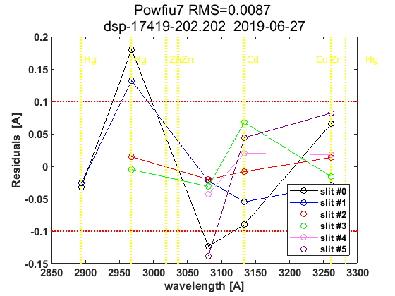
end
load(Cal.file_save,'dsp_summary');
dates=sscanf(cell2str(cat(2,ldsp')),'%03d_%03d_%03d,',[3,Inf]);
dates=datejul(dates(2:3,:)');dates=dates(:,1);
dsp_summary{Cal.n_inst}.info=cellstr(datestr(dates))';
dsp_summary{Cal.n_inst}.res=res;
dsp_summary{Cal.n_inst}.detail=detail;
dsp_summary{Cal.n_inst}.salida=salida;
save(Cal.file_save,'-APPEND','dsp_summary');
ldsp =
4×1 cell array
{'202_17_153'}
{'202_17_157'}
{'202_19_173'}
{'202_19_175'}
ix=sort(findobj('tag','DSP_QUAD_RES'));
printfiles_report(ix',Cal.dir_figs,'aux_pattern',ix);
close all
naux =
1
figura =
'202_figures_DSP_QUAD_RES_1'
naux =
2
figura =
'202_figures_DSP_QUAD_RES_2'
naux =
3
figura =
'202_figures_DSP_QUAD_RES_3'
naux =
4
Tabla - resumen con resultados DSP y Umkehr
QUAD_SUM_table={}; rows={}; tabla_QuadSum={}; format short g;
if config_orig(14)~=config_def(14)
idx=1:length(res)+1; idx(end-1)=0; idx(end)=length(res);
for t=[1:length(res)-1,length(res)+1]
tabla_QuadSum{t}=num2cell(round(res{idx(t)}(end-1,:,1)*10^4)/10^4);
end
tabla_QuadSum{length(res)}=num2cell(round(res{length(res)}(res{length(res)}(:,1,1)==config_orig(14),:,1)*10^4)/10^4);
Q_SUM_table_RowLabels={'Current',dsp_summary{Cal.n_inst}.info{:},dsp_summary{Cal.n_inst}.info{end},'Final'};
else
for t=1:length(res)
tabla_QuadSum{t}=num2cell(round(res{t}(end-1,:,1)*10^4)/10^4);
end
Q_SUM_table_RowLabels={'Current',dsp_summary{Cal.n_inst}.info{:},'Final'};
end
tabla_QuadSum_str=cat(1,tabla_QuadSum{:});
data_ini=cellfun(@(x) (round(x(:,1)*10^4))/10^4,{config_orig(8),config_orig(9),config_orig(10)},'UniformOutput',false);
data_fin=cellfun(@(x) (round(x(:,1)*10^4))/10^4,{config_def(8),config_def(9),config_def(10)},'UniformOutput',false);
QUAD_SUM_table=[{config_orig(14),data_ini{:}}
tabla_QuadSum_str(:,[1 2 4 5])
{config_def(14),data_fin{:}}];
disp([Q_SUM_table_RowLabels',QUAD_SUM_table]);
label_1={'slit\#0','slit\#1','slit\#2','slit\#3','slit\#4','slit\#5'};
UMK_TABLE={};
for um=1:length(res)
steps_umk=res{um}(end-1:end,1,1);
UMK_TABLE{um}=[];
for iumk=1:2
label_2={sprintf('step= %d ',fix(steps_umk(iumk)));'WL(A)';'Res(A)';'O3abs(1/cm)';'Ray abs(1/cm)'};
if iumk==2, dumk=0; else dumk=iumk; end
data=[label_2,[label_1;num2cell([round(detail{um}(1,:,end-dumk,1));detail{um}(2:4,:,end-dumk,1)])]];
UMK_TABLE{um}=[UMK_TABLE{um};data];
end
end
'Current' [286] [0.3444] [ 2.35] [1.1417]
'02-Jun-2017' [286] [ 0.349] [2.9932] [1.1717]
'06-Jun-2017' [286] [0.3431] [3.0695] [1.1552]
'22-Jun-2019' [286] [0.3418] [3.1243] [1.1491]
'24-Jun-2019' [286] [0.3424] [3.1108] [1.1505]
'Final' [286] [ 0.344] [ 2.35] [1.1417]
Tablas y ficheros de definiciones latex
indx=1;
for t=1:length(res)
if t==1 indx=[]; else indx=t-1; end
matrix2latex_QDETAIL(QUAD_DETAIL{t},...
fullfile(Cal.file_latex,['table_QDETAIL',num2str(indx),'_',Cal.brw_str{Cal.n_inst},'.tex']),...
'alignment','c','resize',0.9,'size','footnotesize');
matrix2latex_ctable(UMK_TABLE{t},...
fullfile(Cal.file_latex,['table_UMK',num2str(indx),'_',Cal.brw_str{Cal.n_inst},'.tex']),...
'alignment','c','resize',0.9,'size','footnotesize');
end
matrix2latex_ctable(QUAD_SUM_table,fullfile(Cal.file_latex,['table_dsp','_',Cal.brw_str{Cal.n_inst},'.tex']),...
'Columnlabels',{'Calc-step', 'O3abs coeff.', 'SO2abs coeff.', 'O3/SO2'},...
'RowLabels', Q_SUM_table_RowLabels,'alignment', 'c',...
'resize',0.8,'format',{'%d','%6.4f','%6.4f','%6.4f'},'size','footnotesize');
if length(res)>1
d_p=[length(res)-1 length(res)]; tags={'','new'};
else
d_p=1; tags={'new'};
end
idx=1;
for t=d_p
latexcmd(fullfile(Cal.file_latex,['cal_wavelengthDSP',tags{idx},'_',Cal.brw_str{Cal.n_inst}]),...
['\Auno',tags{idx}],round(res{t}(end-1,2,1)*10000)/10000,...
['\Ados',tags{idx}],round(res{t}(end-1,4,1)*10000)/10000,...
['\Atres',tags{idx}],round(res{t}(end-1,5,1)*10000)/10000,...
['\UMKoffset',tags{idx}],fix(res{t}(end,1)));
idx=idx+1;
end
r=cell2mat(res');
r=reshape(r,15,[],9,2);
mq=median(squeeze(r(7,:,:,1)))
mc=round(median(squeeze(r(7,:,:,2)))*10000)/10000
figure;
plot(dates,squeeze(r(7,:,2,1)),'r:o'); hold on
plot(dates,squeeze(r(7,:,2,2)),'b:+')
hline(mq(:,2),'r',sprintf(' %.4f ',mq));
hline(mc(:,2),'b',sprintf(' %.4f ',mc));
legend('quad','cubic')
datetick;
grid
title(Cal.brw_name(Cal.n_inst))
mq =
Columns 1 through 6
286 0.34276 10.124 3.0902 1.1528 1415.7
Columns 7 through 9
0.35363 0.345 9.7488
mc =
Columns 1 through 6
286 0.3441 10.636 3.1037 1.1555 1434.7
Columns 7 through 9
0.3547 0.3461 10.263
Eto para escribir resultados a hoja excel.
for dsps=1:length(ldsp)
legend1={'step',sprintf('ICF (%d, %d)',CSN_icf{dsps}(1),CSN_icf{dsps}(3)),'abs step','A1 Q','A1 S'};
dsp_table=NaN*ones(9,size(legend1,2));
dsp_table(:,1:5)=[res{dsps}(:,1,1),NaN*ones(9,1),res{dsps}(:,1,1)+salida{dsps}{1}.cal_ozonepos,...
res{dsps}(:,2,1)*10000,res{dsps}(:,2,2)*10000];
dsp_table(end-1,2)=CSN_icf{dsps}(2)*10000; aux=round(dsp_table); aux(:,[2 4 5])=aux(:,[2 4 5])/10000;
aux=[legend1;num2cell(aux)];
cell2str(aux,'\t')
xlswrite('./DSP/dsp_todo.xls',ldsp(dsps),Cal.brw_name{Cal.n_inst},['A',num2str(1+(dsps-1)*11)]);
xlswrite('./DSP/dsp_todo.xls',aux,Cal.brw_name{Cal.n_inst},['B',num2str(1+(dsps-1)*11)]);
end
xlswrite('./DSP/dsp_IZO2.xls',[Q_SUM_table_RowLabels',QUAD_SUM_table],[Cal.brw_name{Cal.n_inst},'_sum']);